S1 · 先认识数据：这片数据里，用户到底在干什么
对应脚本：
sql/sql_01_overview.sql· 对应图：output/charts/s1_behavior_structure.png、s1_daily_trend.png
1. 这份数据有多大
一张表，五行字段：谁（user_id）、对什么商品（item_id）、什么类目（category_id）、干了什么（behavior）、什么时候（timestamp）。
总行为记录 10,000,612 行
用户数 99,020 人
商品数 1,588,317 个
类目数 8,044 个
覆盖天数 9 天一句话记住它：一千万行，十万个人，九天。
为什么要先钉死这几个数？因为它决定了后面所有结论的边界。九天数据只能谈"这一周多的行为结构"，谈不了"用户长期的忠诚度变化"。十万用户是抽样后的规模，做任何绝对量的测算（比如"能多赚多少钱"）之前，先得想清楚能不能从这十万人推到全站——后面 S9 会专门处理这件事。
2. 四种行为各占多少
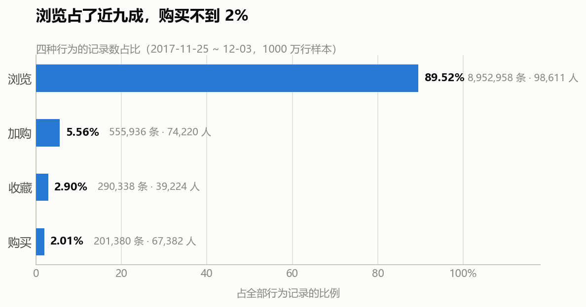
| 行为 | 记录数 | 记录占比 | 有多少人做过 | 人数占比 |
|---|---|---|---|---|
| 浏览 pv | 8,952,958 | 89.52% | 98,611 | 99.59% |
| 加购 cart | 555,936 | 5.56% | 74,220 | 74.95% |
| 收藏 fav | 290,338 | 2.90% | 39,224 | 39.61% |
| 购买 buy | 201,380 | 2.01% | 67,382 | 68.05% |
分两个口径看，是因为这两个口径回答的是不同的问题。
- 记录数回答"动作的总量"：浏览 89.5%，购买 2.0%。全站确实是"逛多买少"，这符合直觉。
- 人数回答"有多少人做过这件事"：这个就有意思了。
这里藏着整份数据的第一个坑
看购买那一行：记录数只占 2.01%，但做过的用户有 67,382 人，占总用户的 68.05%。
真实电商里，有购买行为的用户比例通常是个位数百分比。68% 这个数字如果拿去面试讲，会被直接问穿。
所以关于这份数据必须说清楚的一句话是：
这不是全站流量，而是一批已经被筛过的活跃 / 有购买倾向的用户。
数据集作者在建库时显然做过过滤。这件事有两个后果：
- 转化率之类的比率在这份数据里会普遍偏高，不能拿去和真实业务对标。看到"浏览到加购 75%"这种数不要兴奋，那是筛选的产物。
- 但行为之间的相对结构仍然可信——哪一步比哪一步薄、哪个类目比哪个类目难转化、人在什么时段更活跃，这些"谁比谁高"的问题不受筛选的等比影响。
所以本项目的全部结论都有一条纪律：只讲相对结构，不外推绝对水平。
一句人话结论
浏览是绝对主体（近九成记录），但真正区分用户的是另外三种行为——加购和收藏是两条并列的"有意向"信号，购买是最稀有的动作。
面试可以这么说
"这份数据记录数是 89.5% 的浏览，但按人数看有 68% 的用户产生过购买行为——真实电商这个比例是个位数。所以我判断这份数据集是筛选过的活跃用户集，不是全站流量。因此我全程只讲相对结构，不外推绝对转化率。这个判断我写在了口径文档里，因为它决定了后面每个结论能说到什么程度。"
3. 九天里，每天有什么不同
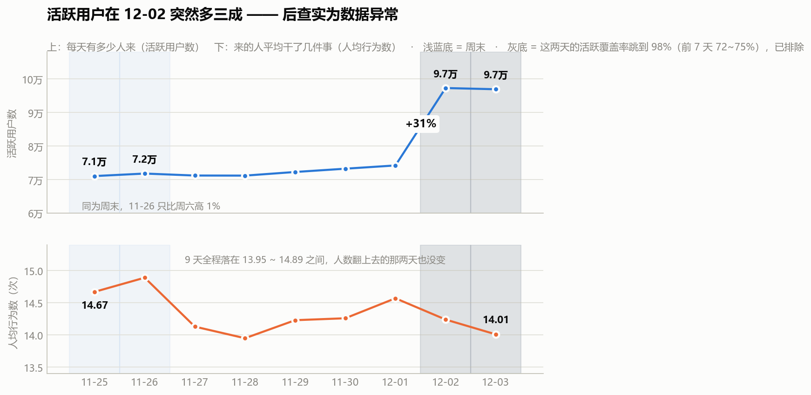
| 日期 | 星期 | 活跃用户数 | 人均行为数 |
|---|---|---|---|
| 11-25 | 周六 | 70,991 | 14.67 |
| 11-26 | 周日 | 71,742 | 14.89 |
| 11-27 | 周一 | 71,151 | 14.13 |
| 11-28 | 周二 | 71,127 | 13.95 |
| 11-29 | 周三 | 72,210 | 14.23 |
| 11-30 | 周四 | 73,187 | 14.26 |
| 12-01 | 周五 | 74,158 | 14.57 |
| 12-02 | 周六 | 97,232 | 14.24 |
| 12-03 | 周日 | 96,870 | 14.01 |
先说一个我差点写错的结论
一眼看上去，12-02 和 12-03 活跃用户从 7.4 万跳到 9.7 万，涨了三成，而这两天正好是周六周日。很容易顺手写下"周末活跃用户多三成"。
但这个结论是错的。 往回看，11-25 和 11-26 也是周六周日，活跃用户是 70,991 和 71,742——周日只比周六高 1.1%，完全没有抬升。
所以：
这不是"周末效应"。同一个数据里两个周末的表现完全不同，说明抬升来自别的东西。
我没有理由硬给它安一个原因。数据里没有活动字段、没有渠道字段，任何"这是大促"的说法都是编的。诚实的说法是：12-02 起出现了一次无法从本数据解释的活跃用户跳涨，最可能对应平台侧的运营活动，但本数据无法证实。
这件事本身才是值得记的：一个看起来特别顺的解释，只要多问一句"那另一个周末呢"，就塌了。
再说一个更硬的发现（这条被 S3 修正过，两种情况都留着）
跳涨的那两天，活跃用户多了 31%，但人均行为数不升反降：12-02 是 14.24，12-03 是 14.01，比全周最高的 14.89（11-26）还低。
九天里人均行为数的范围是 13.95 ~ 14.89，窄得惊人。
我当时从这里推出一个结论：多出来的人应该是"新来的"——因为如果是老用户变活跃，人均行为数应该往上走，而不是平的。
这个推断是错的。 S3 直接查了一件事："12-02 当天的 9.7 万活跃用户里，有多少是这 9 天里第一次出现的？"答案是 2 个人。12-03 是 0 个。
所以跳涨的不是新人。但也不是"一批老用户回流"——S4 算留存时发现了一个更根本的问题：
| 日期 | 当日活跃用户 | 当日活跃覆盖率 |
|---|---|---|
| 11-25 ~ 11-30 | 70,991 → 73,187 | 71.7% → 73.9% |
| 12-01 | 74,158 | 74.89% |
| 12-02 | 97,232 | 98.19% |
| 12-03 | 96,870 | 97.83% |
12-02 那天，99,020 个用户里有 97,232 个是活跃的。 前 7 天稳定在 72~75%，然后一天之内跳到 98.19%。
这不是业务现象。所以 S1 这张图里 12-02/12-03 的那个"跳涨"，最终判定为数据问题，详细过程见 03_时间规律.md 和 04_日活留存.md。本项目的后续分析一律把这两天排除出观察窗。
这次纠错值得单独记一笔。
我用"人均行为数不涨"推出"来的是新人"，逻辑听着顺，其实跳了一步——人均行为数不涨，同样兼容"回来的老用户行为量正常"这个解释，两种情况下这个指标都是平的，它区分不了。
用间接指标做推断，就得准备好被直接指标打脸。S3 那个查询只花了几秒钟就推翻了这一条。
正确的做法是：能用直接指标就别用间接指标。"这些人是不是新面孔"是可以直接查的（比首次出现日期），根本不需要绕道人均行为数。
而这还没完——推翻之后得到的那个"老用户回流"答案，本身也是错的，只是错得没那么明显。真正把它揪出来的是 S4：一个不可能的数字（留存率反弹）把问题暴露了。所以这一条我改了两轮才写对。
一句人话结论
九天里人均行为数几乎纹丝不动（13.95~14.89），活跃用户数却在一个周末跳了三成——来的人变多了，但每个人做的事没变多。至于这多出来的人是谁，S1 看不出来；S3 和 S4 查下去才发现，这两天是数据异常（活跃覆盖率断崖跳到 98%），不是业务现象。
面试可以这么说
"我原本以为 12-02 那个 31% 的跳涨是周末效应，后来发现 11-25、11-26 同样是周末却完全没涨，把这个解释推翻了。
然后我又犯了一次错：看到跳涨那两天人均行为数不升反降，我推出来的人应该是'新用户'——因为老用户变活跃的话人均该涨。后来直接去查'当天的活跃用户里有多少是首次出现'，答案是 2 个人。所以是老人回来了，不是拉新。
但这也还没完。 我在做留存分析时算出一个不可能的数——某个队列第 7 天的回访率 98.5%，比第 1 天的 78.8% 还高，留存不可能反弹。顺着这个错数查下去，才发现 12-02 当天全体 9.9 万用户里有 9.7 万活跃，覆盖率 98.2%，而前 7 天只有 72~75%。这是数据问题，不是业务现象。最后我把这两天剔除了。
同一个结论我改了三轮才写对。教训是：算出来'物理上不该存在'的数字，永远停下来查——比率超 100%、留存反弹、覆盖率断崖，都是数据在报警。"
4. 这一节给后面留下了什么
- 口径纪律：只讲相对结构，不外推绝对水平 —— 已在
00_口径与数据说明.md记录 - 给 S3 的伏笔：本节只看"天"。12-02 那次跳涨，S3 已经下钻查清——见
03_时间规律.md，结论是老用户回流，不是拉新，也不像限时活动（逐小时看是整体等比例抬高，没有突变时点） - 给 S9 的伏笔：人均行为数的稳定性意味着"提高人均行为数"不是一个好抓手，机会更可能在"把已有意向的人推向成交"上
S2 · 交易漏斗主线：从"逛"到"买"，人到底丢在哪一步
对应脚本：
sql/sql_02_funnel.sql（6 个结果集）
对应图：output/charts/s2_funnel.png、s2_user_destination.png、s2_cart_item_fate.png
这是整个项目的核心一节。
⚠️ 口径更正：本文的数字用的是全窗口，后续各节用的是 7 天窗口
本文（S2）做的时候，12-02 / 12-03 这两天的异常还没被发现（那是 S3 才查实的），所以本文所有数字都是 11-25 ~ 12-03 全窗口算的。
从 S3 之后，整个项目一律剔除这两天。所以本文的数字和后面各节对不上，这是两个窗口，不是算错：
| 本文（S2） | S3 之后各节 / Tableau 看板 | |
|---|---|---|
| 观察窗口 | 11-25 ~ 12-03（9 天） | 11-25 ~ 12-01（7 天） |
| 加购人数 | 74,220 | 66,542 |
| 买回人数 | 23,107 | 16,896 |
| 买回率 | 31.13% | 25.39% |
两套数不能互相印证，也不能同时引用。 对外报数字一律用修正后的这一套（7 天窗口）——修正后的口径才是正确的。
本文保留原数字不改，是为了留下"发现异常 → 修正口径"这个过程本身，这比一张干净的最终表更能说明分析是怎么做的。S3 有完整的异常判定依据。
1. 先说一个我算错的地方
第一版我写的漏斗 SQL，跑出来是这样的：
收藏到购买 = 171.79%转化率超过 100%，这不可能。 任何一个大于 100% 或者为负的比率，都不是"数据有问题"，而是"我的口径有问题"。查下来是两处错误：
错误一：把并列关系当成了先后关系。
收藏和加购不是"先收藏、再收藏的人里有一部分加购"，它们是两条平行的意向路径。一个人可能只收藏不加购、只加购不收藏、或者两样都干。把它们串成一条链，分母就错了。
错误二：分子分母不是同一批人。
我写的"加购到购买率"是 购买人数 ÷ 加购人数。但买的人里有 14,040 人从没加过购物车，他们被算进了分子、却不在分母里。分子分母不是同一批人，比率自然虚高。
正确的做法只有一条铁律：
漏斗必须严格嵌套——下一层的人，一定是上一层的人的子集。
所以"加购到购买率"的分子必须是 既加购过、又购买过 的人（53,342），不能是全部购买人数（67,382）。
修正后：
加购到购买率 = 53,342 ÷ 74,220 = 71.87% ✅这件事我留在文档里，因为它比结论本身更能说明问题：比率的合理性检查是最便宜的自检手段。看到一个不该出现的大于 100% 的数，先怀疑自己，别怀疑数据。
2. 修正后的漏斗
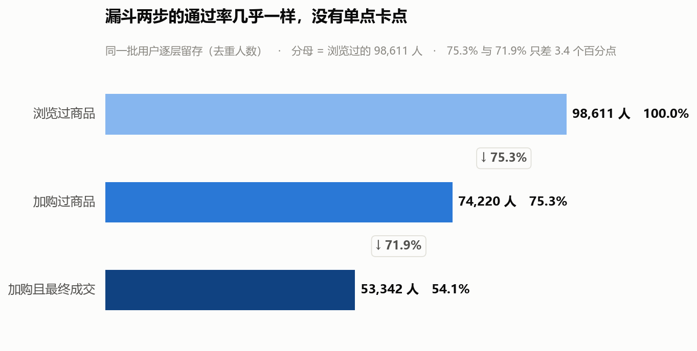
| 层级 | 人数 | 通过率 |
|---|---|---|
| 浏览过商品 | 98,611 | 100% |
| 加购过商品 | 74,220 | 75.27% |
| 加购且最终成交 | 53,342 | 71.87% |
按全路径算，浏览到购买是 68.33%。
这里有个必须先说清楚的反常
两步通过率分别是 75.27% 和 71.87%，只差 3.4 个百分点。换成绝对人数，第一步丢了 24,391 人，第二步丢了 20,878 人，差 3,513 人。
也就是说：没有哪一步称得上是"卡点"。
而且 75% 的浏览到加购率，放在真实电商里是荒谬的——真实电商这一环通常是个位数百分比。
这不能用"淘宝转化好"来解释。它和 S1 里那个 68% 是同一件事的两面：
这批用户是被筛过的。他们本来就是"想买的人"，所以哪一步都不怎么漏。
所以这一节的诚实结论不是"要抓某一步的流失"，而是：
在这个数据集里，"找漏斗卡点"这个问法本身就不成立。 标准漏斗模板套在这份数据上，得到的是一个"没有瓶颈"的结果——这本身是有信息量的，它再次印证了数据是被筛选过的。
⚠️ 但请把"换问题"这件事说清楚：不是答不上来，是答案没法用
漏斗分析存在的唯一用途，是回答"资源该往哪一步投"。两步掉得一样狠，这个问题就没有答案——任何"重点抓加购"的建议都是我硬挑出来的。
而且更根本的是：不是"漏斗正常"，是"漏斗在这份数据上不成立"。 拿漏斗去量一群本来就要买的人，就像在医院候诊室里做"谁需要看病"的调查。
那换成什么，以及为什么换？
转折的触发点是一个具体的反常，不是一个含糊的"问不出东西"。 往下看第 3 节（用户去向）和第 4 节（商品去向）时，出现了三个对不上的数：
| 口径 | 数字 | 问的是 |
|---|---|---|
| 加购过的人，最后买了东西吗 | 71.87% | 人 |
| 加购过的人，买回自己加购那件了吗 | 31.13% | 人 |
| 某件被加购的商品，被同一人买走了吗 | 6.47% | 商品 |
同一批人、同一段时间，从 71.87% 掉到 6.47%。 这个落差才是要去查的东西，也就是下一节要回答的：
既然人没漏、东西却几乎没被买回去——那"加购"这个动作到底标记了什么？
注意新老问题的关系：问的是同一个漏斗的同一格，只是往下钻了一层。
- 老问题问的是数量：这批人有没有漏？→ 答：几乎不漏
- 新问题问的是含义：既然没漏，那"加购"标记了什么？→ 答：标记意向，不标记"快买了"
漏斗只告诉你"人从浏览走到了加购"，没告诉你"走到加购意味着什么"。
3. 先看全站用户的去向
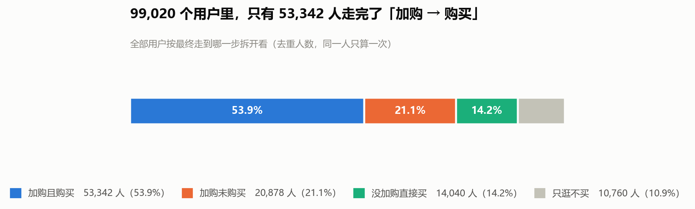
把 99,020 个用户按"最终走到哪一步"拆开，每个用户只算一次：
| 去向 | 人数 | 占比 |
|---|---|---|
| 加购且购买 | 53,342 | 53.9% |
| 加购未购买 | 20,878 | 21.1% |
| 没加购直接买 | 14,040 | 14.2% |
| 只逛不买 | 10,760 | 10.9% |
口径备注：最后一行"只逛不买"是推算出来的（99,020 − 88,260）。这 10,760 人里有 10,351 人确实浏览过，另有 409 个用户连浏览记录都没有（只收藏或只加购）。差异太小，不单独拆。
这张图里有两个值得停下来的地方：
第一，"没加购直接买"有 14,040 人，占购买者的 20.84%。
购物车不是购买的必经之路。五个买家里就有一个完全没碰过购物车——直接搜到、看到、买了。这一条直接动摇了"购物车 = 购买意向的唯一载体"这个常识。
第二，"加购未购买"有 20,878 人。
这就是运营嘴里常说的"购物车里躺着的人"。名字听起来很诱人——人都把东西放车里了，离成交只差一步，催一下是不是就买了？
S9 会专门针对这批人做召回测算。但在此之前，得先搞清楚购物车到底是不是"差一步"。
4. 深水区：购物车其实不是"待付款清单"
上面所有数字都是人的口径——一个用户，算一次。
现在换成商品的口径：一件商品被某人加进了购物车，最后这个人买了它吗？
用 (用户, 商品) 配对来算，样本是 541,496 个"某人加购了某件商品"的配对。
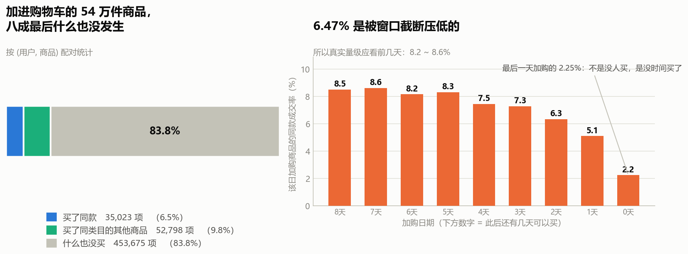
结果：
| 结局 | 配对数量 | 占比 |
|---|---|---|
| 买了同款 | 35,023 | 6.47% |
| 买了同类目的其他商品 | 52,798 | 9.75% |
| 什么也没买 | 453,675 | 83.78% |
加进购物车的商品，八成三最后什么也没发生。
这个数一出来，我立刻怀疑自己
6.47% 低得有点过分，最可能的解释是口径太严：淘宝上同一款商品换一个颜色、换一个尺码，item_id 就是另一个了。用户加购了红色，买了蓝色，按 item_id 精确匹配就算"没买"。
所以要排掉这个可能。我把口径放宽：只要这个人买了同类目下的任何东西就算数——这已经宽松到"加购了红色 T 恤、买了同类目下任何一件衣服都算"。
放宽后是 16.22%。是涨了，但离 6.47% 的那个量级还是同一个数量级。
也就是说：即便允许用户"买了别的同类东西"，仍然有 83.78% 的加购商品颗粒无收。
变异体的解释被排除了。这个数是真的。
人级和商品级的落差，才是真正要说的
把两个口径并排放：
| 数字 | 说的是什么 | |
|---|---|---|
| 人级：加购到购买率 | 71.87% | 加购过的人，最终买了东西 |
| 人级：加购者买回率 | 31.13% | 加购过的人，买回了自己加购过的商品 |
| 商品级：同款成交率 | 6.47% | 某一件被加购的商品，被同一人买走 |
三个数一路走低，讲的是同一件事的不同侧面：
加购过的人，71.87% 确实买了东西。但只有 31.13% 的人买的是自己加购的那些。
剩下 68.87% 的加购者——大约 51,113 人——买了东西，但买的不是他放进购物车的东西。
这就是为什么人级看着漂亮、商品级却很惨。两边都对，只是问的问题不一样。
一句人话结论
购物车不是"待付款清单"，更像"比价清单"或者"意向暂存区"。 用户把东西放进去，是在收集和比较，不是在排队结账。绝大多数放进车里的东西，最后不会被买回来。
这对运营动作意味着什么
如果购物车是"差一步"，那运营动作应该是针对具体商品催单（"你购物车里的 XX 降价了，快下手"）。
但 6.47% 说明这个方向是错的——你催的那件商品，七成以上压根不是他真正想买的。
正确的方向应该反过来：
- 不要针对单个商品催，命中率太低，还会让人反感
- 要针对"加购过的人"整体运营——因为这批人本身是高质量人群（71.87% 会买），值得投入
- 购物车应该被当成"兴趣信号"而不是"意图信号" ——它说明这个人在逛、在比较，但不说明他要买这一件
5. 稳健性检验：6.47% 是不是被时间窗口压低了
必须补这一步。
数据只有 9 天。越晚加购的商品，"之后还有多少时间可以买"越短。 12-03（最后一天）加购的东西，当天没买就再也没机会了。
如果不管这个，6.47% 就是个被系统性低估的数。
按加购日期拆开看：
| 加购日期 | 此后还有几天可买 | 同款成交率 |
|---|---|---|
| 11-25 | 8 天 | 8.51% |
| 11-26 | 7 天 | 8.63% |
| 11-27 | 6 天 | 8.16% |
| 11-28 | 5 天 | 8.32% |
| 11-29 | 4 天 | 7.45% |
| 11-30 | 3 天 | 7.28% |
| 12-01 | 2 天 | 6.34% |
| 12-02 | 1 天 | 5.11% |
| 12-03 | 0 天 | 2.25% |
单调下降，从 8.5% 一路掉到 2.25%。 这就是窗口截断的确凿证据——最后一天加购的商品不是"没人想买"，是"没时间买了"。
所以：
- 6.47% 是低估的，它是 9 天窗口下的观测值
- 真实量级应看跟进期充足的前几天：8.2% ~ 8.6%
- 但结论不变——即便给足时间，加购商品的自成交率仍然是个位数，远低于人级的 71.87%
这一步的意义超过数字本身。 如果不做这个检验，面试官问一句"你这个 6.47% 是不是因为数据只有 9 天"，就只能承认没想过。做了之后，这个软肋变成了加分项：
"我发现最后一天加购的商品成交率只有 2.25%，明显是窗口截断造成的，所以做了一次按加购日期的拆分。成交率随加购日期单调下降，前四天稳定在 8.2~8.6%。所以我说 6.47% 是低估的，真实值在 8% 出头——但无论取哪个，结论都是'加购商品自成交率是个位数'。"
6. 这一节的结论
- 这份数据里没有漏斗卡点。 两步通过率 75.27% / 71.87%，只差 3.4 个百分点。这不是好消息，而是"数据被筛过"的又一次印证——和 S1 那个 68% 是同一件事。
- 购物车不是购买必经之路。 20.84% 的购买者从没加购过。
- 购物车不是待付款清单。 加购的商品只有 6.47% 被同一人买回（放宽到同类目也只有 16.22%，排除变异体解释后仍成立）。
- 人级 71.87% 和商品级 6.47% 的巨大落差，是这一节真正的发现。 加购过的人确实会买，但买的通常不是他加进车里的东西。
- 6.47% 是窗口截断后的低估，真实量级在 8% 出头（按加购日期拆分验证，单调下降是确凿证据）。
7. 面试可以这么说
"我先按标准漏斗做，结果发现两步通过率是 75.3% 和 71.9%，只差 3.4 个百分点——没有卡点。放在真实电商里，75% 的浏览到加购率是不合理的，所以我判断这批用户是被筛过的，和'68% 用户有购买行为'是同一个信号。
于是我把问题换掉了：不问'哪一步漏人'，问'购物车到底意味着什么'。
结果是人级和商品级出现了巨大落差：加购过的人里 71.87% 最终买了东西，但只有 31.13% 买的是自己加购过的商品；按商品算，被加进购物车的东西只有 6.47% 被同一人买走。我一开始怀疑是 SKU 口径太严——同款换个颜色 item_id 就变了——所以放宽到'买了同类目的任何东西也算'，只涨到 16.22%，量级没变，说明不是口径问题。
结论是购物车不是待付款清单，是比价清单。所以'针对购物车商品催单'这个常见动作方向是错的，你催的那件东西七成不是他真正想买的。
最后我补了一个稳健性检验：数据只有 9 天，最后一天加购的商品成交率只有 2.25%，明显是窗口截断。按加购日期拆开后成交率单调下降，前四天稳定在 8.2~8.6%，所以我报告 6.47% 是低估值，真实量级在 8% 出头——但结论不变。"
8. 局限（面试追问的挡箭牌）
- 没有金额字段。 全程用人数和商品数算，没法谈 GMV。这也是 S9 要用情景测算而不是直接测算的原因。
- 只有 9 天。 加购到购买的间隔如果超过 9 天，就观测不到。上面那个检验做了部分修正，但不能完全补上。
- item_id 无法识别"同款不同 SKU"。 已用"同类目"口径做了放宽验证，结论不变，但精确的同款成交率无法算出。
- 没有订单号。 "购买"是一类行为记录，一个人一天买多次算多次事件；本节的"购买人数"是去重人数口径，不受影响。
- 数据已确认是筛选过的活跃用户集。 所有比率只做横向对比（哪个类目/哪群人更高），不往真实业务水平上推。
S3 · 时间规律：用户什么时候最想买
对应脚本：
sql/sql_03_time.sql（5 个结果集）
对应图：output/charts/s3_hourly_shape.png、s3_spike_drilldown.png
这一节要回答两个问题：运营动作该排几点？ 以及 12-02 那次跳涨到底是什么？
1. 一天里的形态
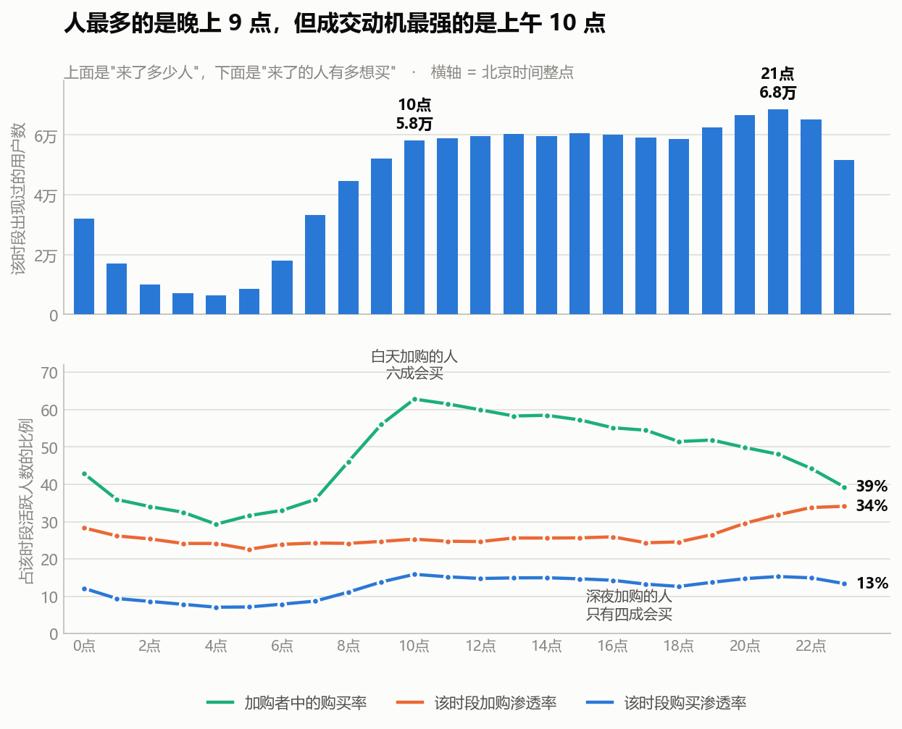
先看上面那格（来了多少人）：
- 谷底在凌晨 4 点，6,473 人
- 从 8 点起快速爬升，午间 13-16 点有一个平台（约 6 万人）
- 晚间 20-23 点是全天高峰，21 点最高，68,331 人
- 0 点仍有 31,971 人——凌晨 0 点的人比上午 8 点还多，典型的电商夜猫子形态
到这里都很常规。真正有意思的是下面那格。
三个比率，一个落差
我算了三件事：
| 指标 | 含义 |
|---|---|
| 该时段购买渗透率 | 这个时段来的人里，有多少买了东西 |
| 该时段加购渗透率 | 这个时段来的人里，有多少加了购物车 |
| 加购者中的购买率 | 这个时段加购过的人里，有多少最终也买了 |
前两个看的是"来的都是什么人"，第三个看的是"这个时段的加购，含金量有多高"。第三个才是这一节的钥匙。
数字很干净：
| 时段 | 加购渗透率 | 加购者中的购买率 |
|---|---|---|
| 10:00 | 25.30% | 62.81% ← 全天最高 |
| 13:00 | 25.61% | 58.28% |
| 15:00 | 25.65% | 57.24% |
| 20:00 | 29.56% | 49.84% |
| 22:00 | 33.77% | 44.23% |
| 23:00 | 34.10% ← 全天最高 | 39.29% |
| 04:00 | 24.15% | 29.30% ← 全天最低 |
两条线是反着走的。
- 深夜：来的人加购倾向最强（23 点有 34.10% 的人加购，全天最高），但这些人加购完之后，只有 39.29% 真的买了。
- 白天 10 点：加购倾向其实一般（25.30%），但加购的人里62.81% 真的买了，全天最高。
也就是说：
深夜的加购，和白天同样是"加购"，但含义不一样。
白天把东西放进购物车的人，六成以上是真要买；深夜放进去的人，只有不到四成会买。
凌晨 4 点最极端——加购的人里只有 29.30% 会买，全天最低。
这和 S2 的结论对上了
S2 从商品配对的角度得出结论：购物车不是待付款清单，是比价清单——加进去的东西只有 6.47% 会被同一人买回。
S3 从时间角度撞到了同一件事：深夜的加购尤其不像"准备买"，更像"先存着，改天再说"。
两条完全不同的分析路径——一条按商品配对，一条按小时切分——指向了同一个结论。这种独立验证比任何单一分析都更有说服力，因为它排除了"某一种算法造成的假象"。
那"人最多的时候"到底是不是"最想买的时候"？
严格说，购买渗透率的峰值确实在白天（10 点 15.89%，全天最高；21 点是 15.30%），但两者只差 0.6 个百分点，这个差距太小，不值得当作结论说。
真正有落差的是加购的含金量：10 点 62.81% vs 23 点 39.29%，差了 23.5 个百分点。这才是能拿去开会说的数字。
一句人话结论
人流高峰在晚上 9 点，但"逛"的高峰和"认真想买"的高峰不是一回事——深夜来的人加购最积极，含金量却最低。
对运营动作意味着什么
- 大促、限时活动的起止时点应该避开 23 点之后的深夜段。那个时段人来得多、加购也多，看着热闹，但转化最差——数据好看、结果不好。
- 上午 10 点前后是"高意图时段"，适合推送限时优惠、发券、做"今日特价"——这时候的人加购了就是真要买，催一下是顺水推舟。
- 深夜的加购用户不要立刻催。"你购物车里的商品降价了"这种提醒在下午发，命中率会比半夜发高得多（62.81% vs 39.29%）。
2. 12-02 那次跳涨，到底是什么
S1 留了个尾巴：12-02 活跃用户比前一天多了 31%，同期的人均行为数却没变。S1 当时猜是"新用户来了"——猜错了。这一节把它查清楚。
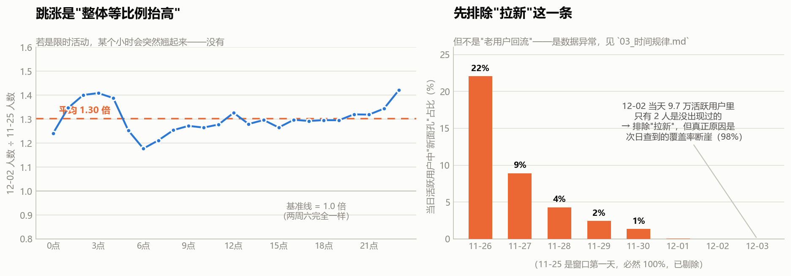
排除法一：是不是限时活动？
限时活动通常有明确的起止时点——某个小时会突然翘起来。
我把两个同为周六的日期（11-25 和 12-02）按小时做了个比值：
- 凌晨 6 点：1.18 倍
- 上午 10 点：1.27 倍
- 晚上 9 点：1.32 倍
- 全天平均：1.30 倍
线基本是平的。 没有任何一个小时出现异常尖峰。
结论：不是限时活动。 活动会有明确的起止时点，而这里是全天等比例抬高——像是"人变多了"，不是"某一刻发生了什么"。
小提醒：凌晨几个小时的比值波动较大（从 1.18 到 1.42）。这是小样本噪声——凌晨本来就人少，基数小的时候比值容易抖。不能把 1.42 当成"凌晨被拉动了"。
排除法二：是不是拉来了新用户？
直接查：12-02 当天的 9.7 万活跃用户里，有多少是这 9 天窗口内第一次出现的？
答案是 2 个人。12-03 是 0 个。
| 日期 | 当日活跃 | 窗口内首次出现 | 新面孔占比 |
|---|---|---|---|
| 11-26 | 71,742 | 15,823 | 22.06% |
| 11-27 | 71,151 | 6,338 | 8.91% |
| 11-28 | 71,127 | 3,057 | 4.30% |
| 11-29 | 72,210 | 1,775 | 2.46% |
| 11-30 | 73,187 | 996 | 1.36% |
| 12-01 | 74,158 | 38 | 0.05% |
| 12-02 | 97,232 | 2 | 0.00% |
| 12-03 | 96,870 | 0 | 0.00% |
不是拉新。 多出来的两万多人，全都是 11-25 ~ 12-01 期间已经出现过的老用户。
有一个必须说清楚的点：这列数字整体是递减的，从 22% 一路降到 0。这有一部分是必然的——窗口越往后，"还没出现过的人"这个池子本来就越来越小。所以不能说"11-26 的新客质量比 11-30 好"。
但对我们这个问题来说，递减恰恰是关键证据：到 12-01 时新面孔池已经耗尽（只剩 38 人），12-02 增长 31% 却只带来 2 个新面孔——说明这次跳涨在结构上不可能是拉新，只能是老用户回流。
排除法三：到底来了多少人？——查到这里结论反转了
前面两条排除（不是活动、不是拉新）做完，我本来准备写"一批老用户集中回流"。但在 S4 算留存矩阵时，算出了一个不可能的数字：
队列 11-25 的 D7 回访率 = 98.54%
队列 11-25 的 D1 回访率 = 78.77%第 7 天的回访率比第 1 天还高。 留存不可能反弹，所以肯定哪里错了。查下来是这两天的数据本身有问题：
| 日期 | 当日活跃用户 | 全体用户 | 当日活跃覆盖率 |
|---|---|---|---|
| 11-25 ~ 11-30 | 70,991 → 73,187 | 99,020 | 71.7% → 73.9% |
| 12-01 | 74,158 | 99,020 | 74.89% |
| 12-02 | 97,232 | 99,020 | 98.19% |
| 12-03 | 96,870 | 99,020 | 97.83% |
12-02 那天，99,020 个用户里有 97,232 个是活跃的——覆盖率 98.19%。
前 7 天这个数字稳定在 72~75%，然后一天之内跳到 98.19%。
这不是"一批老用户回来了"，这是几乎所有用户那天都来了。
而一个真实的电商平台，不可能在某一个普通的 12 月 2 日让 98% 的用户同时上线。对照一下：一个典型用户在这 9 天里活跃 7.06 天（活跃率约 78%），所以任意一天活跃率在 78% 左右是正常的——98% 意味着"几乎没有人缺席"，这在自然业务里不成立。
所以我改口
我原来准备写的"老用户集中回流"不准确。准确的表述是：
12-02 / 12-03 两天的覆盖率出现断崖式跳变（74.89% → 98.19%），这不像自然业务现象，更像数据层面的问题——比如数据集最后两天的抽取边界与前 7 天不同。
但我无法从这份数据证实这个猜测，只能说它不符合业务常识。
处理方式：我不去解释它，也不使用它。S4 的留存分析把这两天从观察窗里剔除了（窗口截止到 12-01），否则任何"第 N 天回访"都会被这两天污染——上面那个 98.54% 就是没剔除的后果。
这一条是本项目里最值钱的一次自我纠错。 它不是我发现了什么新规律，而是我发现自己的数据有问题，并且是在一个完全不相关的分析（S4 留存）里发现的。
注意发现的路径：不是"我怀疑数据有问题所以去查"，而是"我算出了一个不可能的数字（D7 > D1），顺着它查下去，才撞上这个断崖"。
和 S2 那个 171.79% 是同一个套路：不可能的数字是数据给你的报警信号。比率超 100%、留存反弹、转化率飙升——这些"物理上不该出现"的数值，永远值得停下来查，而不是当成巧合跳过。
一句人话结论
12-02 的跳涨，既不是周末效应、也不是限时活动、更不是拉新。查到底发现当天全体用户有 98.19% 活跃，而前 7 天只有 72~75%——这个断崖不符合业务常识，我判断是数据层面的问题，但因无法证实，选择不使用这两天的数据。
3. 这一节的结论
- 典型电商双峰形态：午间 13-16 点一个平台，晚间 20-23 点最高峰（21 点，68,331 人），凌晨 4 点谷底。0 点的人比早 8 点还多。
- "逛"的高峰不等于"买"的高峰：真正有落差的是加购的含金量——上午 10 点加购的人 62.81% 会买，深夜 23 点加购的人只有 39.29%。
- 这是对 S2 结论的独立验证：S2 从商品配对得出"购物车是比价清单"，S3 从时间维度撞到同一件事——深夜的加购尤其不像"准备买"。两条独立路径指向同一结论，比单一分析可信得多。
- 12-02 / 12-03 是数据异常，不是业务现象：这两天全体用户覆盖率断崖跳到 98%，前 7 天只有 72~75%。已从 S4 的观察窗剔除。既不是周末效应、不是限时活动、也不是拉新。
4. 面试可以这么说
"我先看了一天的小时分布，很常规——晚上 9 点人最多。但我觉得'人最多'和'最想买'是两回事，所以算了一个别人不太算的指标：某个时段加购过的人里，有多少最终也买了。
结果这条线跟活跃度完全是反的：上午 10 点加购的人 62.8% 会买，深夜 23 点加购的人只有 39.3%。深夜的人加购最积极（34% 的人加购，全天最高），但含金量最低。
这跟我 S2 的结论对上了——S2 发现加购的商品只有 6.47% 被同一人买回，我说购物车是比价清单。S3 从时间维度独立撞到了同一件事：深夜的加购尤其不像'准备买'。两条完全不同的分析路径指向同一个结论，这种验证比单一分析可信得多。
另外 S1 留了个尾巴，12-02 活跃用户突然涨了 31%。我先排除了限时活动——按小时看，两个周六的比值全天稳定在 1.3 倍，没有突变时点；又排除了拉新——当天 9.7 万活跃用户里只有 2 个是首次出现。
本来我准备写'老用户集中回流'，结果在做留存分析时算出一个不可能的数：某个队列第 7 天的回访率 98.5%，比第 1 天的 78.8% 还高。留存不可能反弹，顺着这个错数查下去，发现 12-02 那天全体 9.9 万用户里有 9.7 万是活跃的，覆盖率 98.2%，而前 7 天稳定在 72~75%。
这不是业务现象，是数据问题。我没有用它，把这两天从留存窗口里剔除了。这件事教我的是：算出来'物理上不该存在'的数字，永远要停下来查——它是数据在给你报警。"
5. 局限
- "该时段出现过的用户数"不是当天人数。 同一个人在不同天都出现在 20 点，只算一次。所以 24 个小时加起来远大于 99,020。这个口径适合回答"谁会在这个时段出现"，不适合回答"总量"。要看总量请用 S1 的每日概览。
- 各时段的口径是 9 天合计，不是"某一天的小时曲线"。所以本节的形态是九天平均形态，单日的异常（比如 12-02）会被平掉。12-02 的逐小时数据单独列在结果 4 里。
- 12-02 / 12-03 判定为数据异常，处理方式是"不使用"而非"解释"。 数据集无活动字段、无渠道字段，我无法证实它到底是什么原因，只能说覆盖率 98% 不符合业务常识。因此这两天的数据在 S4 及之后一律排除出观察窗。如果后续分析（S5 复购、S6 类目）用到逐日数据，也必须先剔除这两天。
- 凌晨时段样本小，比值和渗透率的波动大，解读时要谨慎，不要拿凌晨的小时去下强结论。
S4 · 日活留存：这一节真正值钱的，不是留存结论
对应脚本：
sql/sql_04_retention.sql（5 个结果集）
对应图：output/charts/s4_why_flat.png、s4_firstday_gap.png
按标准分析框架，这一步该回答："来逛过的人，过几天还会不会来？留存曲线掉得多快？"
我把这套流程完整跑了一遍，结果是：留存曲线不掉。而且这一节最大的产出也不是这个结论，是我在做留存的时候，算出了一个不可能的数字，顺着它把上一节（S3）的结论整个推翻重写了。
先把口径说清楚，否则这一节每一句话都是错的。
0. 先说清楚：这一节的"留存"是代理口径，不是真留存
真正的留存分析需要注册时间。有了它，才能定义"第 1 天注册的那批人，第 7 天回来了多少"。
这份数据没有注册时间，也没有首访时间。 五个字段里只有 user_id / item_id / category_id / behavior / timestamp，没有一个是用户属性。
所以只能用"在这 9 天窗口里第一次出现的那天"冒充"注册日"。这个替代品有个致命缺陷：
窗口的第一天（11-25），会把所有本来就已经存在的老用户全部算成"新用户"。
有多严重？11-25 这一天"新增"了 70,991 人，占全体 99,020 人的 71.7%。剩下 8 天加起来才 28,029 人。也就是说，这个"首批队列"根本不是一批新用户，它是一个什么人都往里装的桶。
因此这一节全程遵守一条纪律：
一律说【回访率】，不说"新客留存"。 回访率的意思是"距离他第一次露面 N 天后，他又出现了"——它描述的是行为节奏，不是用户生命周期。
这条纪律必须写进文档，因为这两个词在面试里是会被追问的。
1. 标准问题：回访率会衰减吗
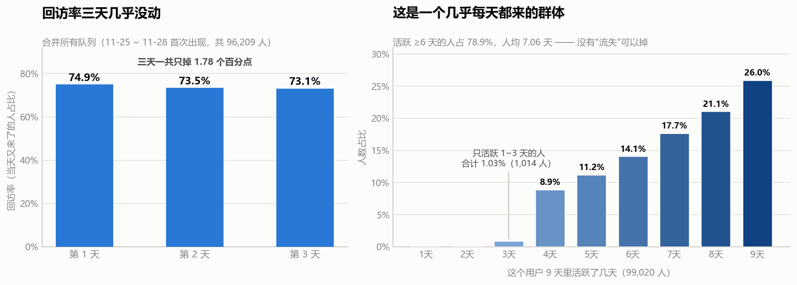
把 11-25 ~ 11-28 首次出现的四个队列合并起来（共 96,209 人），看他们在第 N 天的回访率：
| 距离首次出现的天数 | 队列人数合计 | 回访率 |
|---|---|---|
| 第 1 天 | 96,209 | 74.90% |
| 第 2 天 | 96,209 | 73.46% |
| 第 3 天 | 96,209 | 73.12% |
三天一共掉了 1.78 个百分点。
正常的留存曲线长什么样？第一天掉到 30~40%，第七天掉到 10% 上下——陡降之后趋平。这里是一条几乎水平的线。
再看左边那张图的横轴起点：我从 0 开始画，没有把纵轴裁到 70% 再放大。如果我裁了轴，这条"线"看起来会更平——那是画出来的平，不是数据里的平。 从 0 起画，才能看出它确实是 75% 上下不动，而不是"勉强维持"。
为什么不掉？答案在右图
每个用户在这 9 天里活跃了几天：
| 活跃天数 | 人数 | 占比 |
|---|---|---|
| 9 天 | 25,709 | 25.96% |
| 8 天 | 20,895 | 21.10% |
| 7 天 | 17,531 | 17.70% |
| 6 天 | 13,956 | 14.09% |
| 5 天 | 11,103 | 11.21% |
| 4 天 | 8,812 | 8.90% |
| 3 天 | 898 | 0.91% |
| 2 天 | 101 | 0.10% |
| 1 天 | 15 | 0.02% |
- 活跃 6 天及以上的人占 78.85%
- 活跃 3 天及以下的人只占 1.03%（1,014 人）
- 人均活跃 7.06 天（共 9 天）
这不是一条留存曲线该有的人群结构。这是一个"几乎每天都来"的群体，里面根本没有"流失的人"可以掉。
这是同一个坑的第三次显形
回头串一下：
| 步骤 | 标准框架预期 | 实际结果 | 同一个根因 |
|---|---|---|---|
| S1 | 购买用户占个位数 | 68.05% | 数据被筛选过 |
| S2 | 漏斗有单点卡点 | 75.3% 与 71.9%，只差 3.4 个点 | 没有明显卡点 |
| S4 | 留存曲线衰减 | 三天掉 1.78 个百分点 | 没有流失用户 |
三次都指向同一件事：这份数据不是全站流量，是一批已经被筛过的活跃 / 有购买倾向的用户。 S1 发现的那个 68%，到 S4 又换了一张脸出现。
这件事本身比任何一条留存结论都更值得讲——它说明"标准框架套不上"不是一个可以绕过的意外，而是这份数据的固有属性。绕过去硬套，就会写出"留存健康度良好，建议加强召回"这种废话。
一个可以泛化的判断方法：当你在一个小样本、短窗口、"看起来是用户全量其实是被筛过的"数据集上做留存，先算一下人均活跃天数 / 窗口长度。这个比值接近 1（这里是 7.06 / 9 = 78%），留存分析就不用做了——没有可流失的余量。
这个检查只要一行 SQL，但能在开工前省掉一整节白做的分析。
2. 意外收获：一个不可能的数字，把数据问题揪出来了
这一节最重要的产出不在上面，而在下面。
我第一版留存矩阵是把 9 天全用上的。跑出来是这样：
队列 11-25 的 D7 回访率 = 98.54%
队列 11-25 的 D1 回访率 = 78.77%第 7 天的回访率比第 1 天还高。
留存不可能反弹——它是个单调不增的东西。第 7 天回来的人，必然是第 1 天之后没流失的那部分。出现反弹，只可能是数据错了。
顺着这个错数往回查，查到的是：
| 日期 | 当日活跃用户 | 全体用户 | 当日活跃覆盖率 |
|---|---|---|---|
| 11-25 ~ 11-30 | 70,991 → 73,187 | 99,020 | 71.7% → 73.9% |
| 12-01 | 74,158 | 99,020 | 74.89% |
| 12-02 | 97,232 | 99,020 | 98.19% |
| 12-03 | 96,870 | 99,020 | 97.83% |
12-02 那天，99,020 个用户里有 97,232 个是活跃的。
前 7 天稳定在 72~75%，一天之内跳到 98.19%。而一个典型用户在这 9 天里活跃 7.06 天（活跃率 78%），所以任意一天有 78% 的人出现是正常的；98% 意味着"几乎没有人缺席"，这在自然业务里不成立。
处理方式：判定为数据异常，把观察窗截止到 12-01，这两天不使用。 上面所有的回访率都是在这个窗口下算的。如果用了那两天，任何一个"第 N 天回访"都会被污染成没有意义的数字。
完整的过程写在
03_时间规律.md的"排除法三"。 这里只记一句：这一节是那个结论的发现现场。发现的路径值得单独强调：不是"我怀疑数据有问题所以去查"，而是"我算出了一个不该存在的数字，顺着它查下去，撞上了断崖"。
这和 S2 那个 171.79% 是同一个套路。到这一步，我可以说这是一条可复用的纪律了：物理上不该出现的数值——比率超 100%、留存反弹、覆盖率断崖、转化率飙升——永远停下来查，它是数据在给你报警。
3. 唯一可能开出动作的发现：首日加购
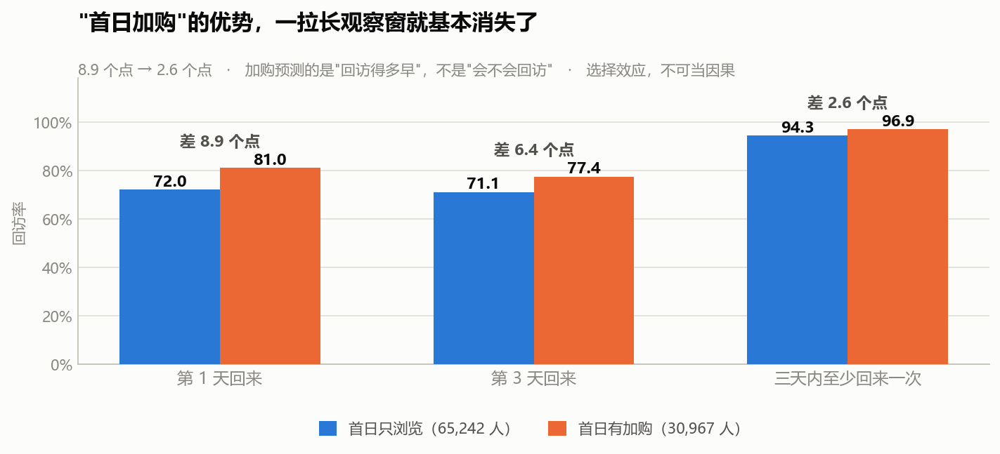
这一节唯一有业务味道的问题是：第一次露面那天的行为，能不能预测他后面还来不来？
按"首次出现当天有没有加购"把用户分成两组：
| 分组 | 人数 | 第 1 天回来 | 第 3 天回来 | 三天内至少回来一次 |
|---|---|---|---|---|
| 首日只浏览 | 65,242 | 72.03% | 71.07% | 94.28% |
| 首日有加购 | 30,967 | 80.95% | 77.44% | 96.89% |
| 差距 | — | 8.92 个点 | 6.37 个点 | 2.61 个点 |
这张表最值得看的是最后一列。
单看第 1 天，8.92 个点的差距，很容易写成"加购用户的忠诚度显著更高，应引导用户加购"。
但把观察窗从"第 1 天"拉宽到"三天内任意一天"，差距从 8.92 个点坍缩到 2.61 个点。 三天内，两组人的回访率分别是 94.28% 和 96.89%——都在 95% 上下，几乎没有区别。
所以准确的结论是：
首日加购预测的是"回访得多早"，不是"会不会回访"。
加购过的人第二天更可能就回来了，但那些只浏览的人，多给两天时间也基本都会回来。这不是一个"量"的差距，是一个"时机"的差距。
而且这连因果都不是
即使上面那个 2.61 个点是真的，也不能说"引导用户加购能提升回访"。原因是选择效应（selection effect）：
会主动把商品加进购物车的人，本身就是意图更强、更可能回访的那批人。是"这个人本来就打算回来"同时导致了他"加购"和"回访多"，而不是加购导致了回访。
要证明因果，得做 A/B 实验：随机把一批用户分成两组，一组弹窗引导加购、一组不弹，再看回访率差异。本数据做不到，所以这一条只能作为描述性发现，不能作为因果结论。
面试里如果只讲"加购用户回访率高 8.9 个点"，讲完就完了；如果补上"但拉长窗口差距只剩 2.6 个点，而且这是选择效应不是因果"，这一条的分量完全不同。主动说出自己结论的边界，比结论本身更能证明你想清楚了。
4. 一个我查了、但决定不用的数
留存矩阵里还有一个数让我停下来看了一眼：
| 首次出现日 | 队列人数 | D1 | D2 | D3 |
|---|---|---|---|---|
| 11-25 | 70,991 | 78.77 | 76.76 | 75.95 |
| 11-26 | 15,823 | 65.24 | 64.79 | 65.70 |
| 11-27 | 6,338 | 61.50 | 62.54 | 64.41 |
| 11-28 | 3,057 | 62.90 | 64.54 | 63.79 |
| 11-29 | 1,775 | 68.28 | 72.62 | — |
| 11-30 | 996 | 94.48 | — | — |
| 12-01 | 38 | — | — | — |
| 12-02 | 2 | — | — | — |
11-30 队列的 D1 是 94.48%，而相邻队列是 68.28% 和 62.90%。我专门写了一条查询去验证，确认不是算错——996 人里有 941 人次日回来了。
队列人数从 70,991 一路降到 996，这个是必然的（"还没出现过的人"这个池子本来就越来越少），不是发现。
但 94.48% 这个跳变我解释不了。它和 11-26 ~ 11-29 的 61~68% 完全不是一个量级，而 11-30 恰好紧挨着 12-02 那个覆盖率断崖。我怀疑它和那个断崖是同源的数据问题，但这份数据不支持我证实。
所以处理方式和 12-02 一样：不使用，也不编原因。 好在它只有 996 人（占全体 1%），而且合并曲线只用了 11-25 ~ 11-28 四个队列（能完整观察到第 3 天的那几个），它影响不到上面的结论。
这是我在这个项目里第二次遇到"解释不了的数"。和第一次的区别是：第一次我急着给它安原因（先猜"新用户"，再猜"老用户回流"），两次都错了；这一次我是先查证它是不是真的，确认是真的之后，直接标注为"不使用"。
能接受"我不知道"，是这一节我自己最看重的变化。
5. 一句人话结论
这份数据里没有留存问题可做——因为它的人均活跃天数是 7.06 天（共 9 天），79% 的人至少活跃 6 天，只来 1~3 天的人只有 1%。留存曲线是一条平线，不是"留存做得好"，是没有可流失的人。
6. 面试可以这么说
"这一步我按标准留存分析跑了一遍，但结论是这个框架在这份数据上不成立。
先说口径：数据没有注册时间，我只能用'窗口内首次出现'冒充新用户，所以严格说这是回访率不是留存率。而且窗口第一天会把 71.7% 的老用户全算成新客，我在文档里专门标了这一点。
算出来的回访率，第 1 天 74.9%，第 3 天 73.1%，三天只掉 1.78 个百分点。正常留存曲线第一天就该掉到三四成。我去查了为什么——每个用户这 9 天里平均活跃 7.06 天，79% 的人至少活跃 6 天，只活跃 1 到 3 天的只有 1%。这是一个几乎每天都来的群体，里面没有流失的人可以掉。 这与我在第一步发现的'购买用户占 68%'是同一个根因：这份数据是被筛过的活跃用户集。这是我第三次撞上同一堵墙。
但这一节真正重要的是另一件事。 我第一版留存矩阵把 9 天全用上了，跑出来一个数：某个队列的第 7 天回访率 98.5%，比第 1 天的 78.8% 还高。留存不可能反弹，所以肯定是数据错了。顺着查下去发现，12-02 那天全体 9.9 万用户里有 9.7 万活跃，覆盖率 98.2%，而前 7 天稳定在 72 到 75%。这是数据问题，不是业务现象，我把这两天剔除出观察窗了。
我把这条写成了一句可以复用的纪律：算出来物理上不该存在的数字，永远停下来查——它是数据在报警。 这不是我怀疑数据才去查的，是那个数自己跳出来告诉我的。
最后有一个能开动作的发现：首次露面当天加购过的人，第 1 天回访率 81.0% 对 72.0%，高 8.9 个点。但我把窗口拉宽到三天内任意一天，差距缩到 2.6 个点，两组人都在 95% 左右。所以加购预测的是回访得多早，不是会不会回访。而且它是选择效应，不能当因果——要验证得做 A/B 实验。"
7. 局限
- "回访率"不是"留存率"。 没有注册时间，只能用窗口内首次出现日替代，11-25 那个队列把 71.7% 的老用户算成了新客。所有数字只能解读为行为节奏，不能解读为生命周期。
- 观察窗截止 2017-12-01。 12-02 / 12-03 覆盖率断崖（98% vs 前 7 天 72~75%），判定为数据异常后剔除。S5 及之后任何用到逐日数据的分析，都必须先剔这两天。
- 只有 9 天窗口，"第 3 天"就到头了。 真正的留存分析要看 D1 / D7 / D30，这里最多只能看到 D3，长期留存问题本数据回答不了。
- 11-30 队列的 D1（94.48%）无法解释，已标注不使用。 队列 996 人，占全体 1%，不影响合并曲线（只用 11-25 ~ 11-28 四个队列）。
- "首日加购"那一组是选择效应，不是因果。 想证实需要 A/B 实验，本数据无实验设计字段。
- 回访率普遍偏高是筛选造成的，不能拿去和真实业务对标，只能做组间横向比较。这与
00_口径与数据说明.md的口径 3 一致。
S5 · 复购：买过一次的人，还会不会再来买
对应脚本：
sql/sql_05_repurchase.sql（6 个结果集）
对应图：output/charts/s5_one_and_done.png、s5_repeat_pattern.png
前四步看的是"人怎么来、来了干什么、什么时候来、还会不会来"。这一节换一个角度：已经掏过钱的人，会不会再掏一次。
标准问题是"复购率是多少"。但这份数据有一个硬伤，导致"复购率"可以算出两个完全不同的值。所以这一节仍然从口径开始。
0. 没有订单号，所以"复购"有两种算法
真实电商数据里有订单号，一张订单可能包含多个商品。这份数据没有订单号。
五个字段是 user_id / item_id / category_id / behavior / timestamp。一条 buy 记录的含义是"某人在某时刻对某个商品发生了一次购买动作"。
这就带来一个歧义：同一天买了 3 件商品，会留下 3 条 buy 记录。
于是"这个人复购了吗"就有两种算法：
| 口径 | 定义 | 问题 |
|---|---|---|
| 购买记录数 > 1 | 有多于一条 buy 记录 | 同一天买 3 件也算"复购" |
| 购买天数 > 1 | 在多于一个日期产生过购买 | 跨天才是真的又来了 |
两个口径差多少？
| 口径 | "只买过一次"的人占比 |
|---|---|
| 按购买记录数 | 40.57%（23,313 / 57,470） |
| 按购买天数 | 54.30%（31,207 / 57,470） |
| 差距 | 13.73 个百分点 |
同样一批人，同样一份数据，换个口径，"一次即走"的比例差了将近 14 个点。 那 14 个点，全部是"在同一个日子里买了好几件商品"的人——他们行为上是一次购物，但记录上是多条购买。
这和 S1 那个"记录数 2.01% 对人数 68.05%"是同一堂课的第二遍：凡是"次数"类的指标，必须先问一句"这个次数的单位是什么"。 记录数、天数、人数是三样东西，混用就会出现 14 个点的偏差。
本节的"复购"一律用【购买天数 > 1】这个口径。
还有一个必须说清楚的前提：这一节所有数字的观察窗是 11-25 ~ 12-01（12-02/12-03 是 S3/S4 查实的数据异常，已剔除），窗口内有 57,470 人产生过购买行为。
1. 一次即走：一半以上的购买者
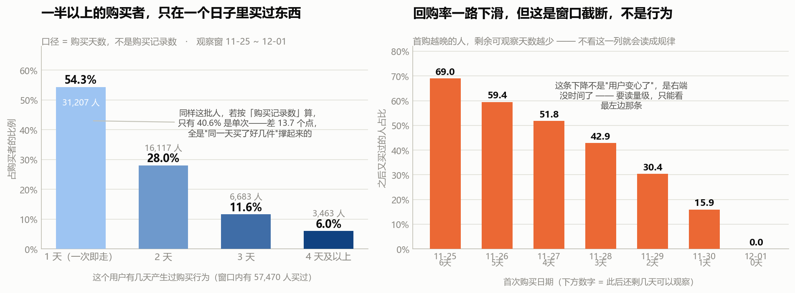
按购买天数分层：
| 有几天买过 | 人数 | 占购买者比例 |
|---|---|---|
| 1 天（一次即走） | 31,207 | 54.30% |
| 2 天 | 16,117 | 28.04% |
| 3 天 | 6,683 | 11.63% |
| 4 天及以上 | 3,463 | 6.03% |
超过一半的购买者，在窗口内只在一个日子里买过东西。
而且这个数字是被高估的——因为窗口只有 7 天，任何"只买过一天"的人，都有可能是"还没来的及买第二次"。后面第 2 小节会专门处理这个偏差。
和 RFM 项目的跨项目互证
我在之前的电商 RFM 项目里得到过一个结论：约三成客户只买过一次。
这一节如果只看观察时间最长的那个队列（11-25 首次购买，此后还有 6 天可观察，13,098 人）：回购率 68.97%，也就是 31.03% 的人一次即走。
31.03% —— 和 RFM 项目里那个"约三成"几乎一模一样。
两个项目、两个数据集、两个完全不同的计算路径（一个是订单金额的 RFM 分层，一个是行为事件流的购买天数），落到了同一个数字上。这种跨项目互证是最有说服力的验证——它排除了"某个数据集的结构特点造成的巧合"。
但要注意：这只是"数字对上了"，不代表两个数据集描述的是同一批消费者。RFM 项目的数据是另一个来源、另一个时间段。这里是量级上的呼应，不是同一群人的追踪。
2. 回购率一路下滑——但它自己在往下掉，是因为窗口
（上图右格即本小节的图。）
按"首次购买日期"分组，看这些人之后还会不会再买：
| 首次购买日 | 首购人数 | 此后还剩几天可观察 | 之后又买过的人 | 回购率 |
|---|---|---|---|---|
| 11-25 | 13,098 | 6 天 | 9,034 | 68.97% |
| 11-26 | 10,579 | 5 天 | 6,288 | 59.44% |
| 11-27 | 9,433 | 4 天 | 4,886 | 51.80% |
| 11-28 | 7,341 | 3 天 | 3,147 | 42.87% |
| 11-29 | 6,507 | 2 天 | 1,977 | 30.38% |
| 11-30 | 5,841 | 1 天 | 931 | 15.94% |
| 12-01 | 4,671 | 0 天 | 0 | 0.00% |
这条线从 69% 一路滑到 16%，看着像一个漂亮的结论——"越晚来的用户质量越差"。
它是假的。
请一起看第三列"此后还剩几天可观察"：它和回购率是同一条下滑线。 11-25 首购的人有 6 天时间可以再买，11-30 首购的人只有 1 天。12-01 首购的人一天都没有——回购率必然是 0，这不是"没人回购"，是"根本没时间回购"。
这就是窗口截断（right-censoring）：观察窗在右边被切断了，越靠近右端的人，被观察到的机会越少。
一个必须养成的习惯：凡是跨时间算出来的比率（回购率、转化率、留存率），都要按时间维度切开看一眼。如果这个比率和"剩余可观察时长"同步下滑，那它测的是窗口，不是行为。
S4 的留存矩阵（第 3 天之后就没法观察了）用的是同一套检查。这是本项目里第二次用它，说明它是一条通用纪律，不是一个特殊技巧。
处理方式：要读量级，只能读最左边那一列（11-25 首购，6 天可观察，68.97%）。中间那几列只能用来做组间横向比较（比如"控制了观察时长之后，哪类人回购得更多"），不能读绝对值。
3. 回购是"换别的东西买"，不是认准一件反复买
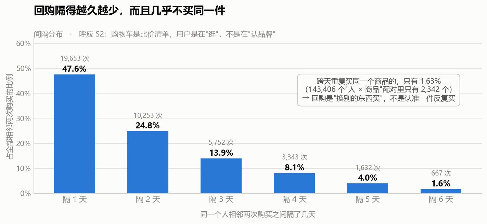
看相邻两次购买之间的间隔：
| 间隔 | 次数 | 占比 |
|---|---|---|
| 隔 1 天 | 19,653 | 47.59% |
| 隔 2 天 | 10,253 | 24.83% |
| 隔 3 天 | 5,752 | 13.93% |
| 隔 4 天 | 3,343 | 8.09% |
| 隔 5 天 | 1,632 | 3.95% |
| 隔 6 天 | 667 | 1.62% |
大致每隔一天掉一半，很干净。但这条曲线的解读要小心——这是一个"几乎每天都来"的群体（S4：人均活跃 7.06 / 9 天），所以他们"隔 1 天"占一半，很大程度上只是因为他们本来就每天都来，不是"回购周期短"。不能说"回购周期是 1 天"。
真正有信息量的是下面这个数：
143,406 个"人 × 商品"配对里，跨天重复买过同一个商品的，只有 2,342 个 —— 1.63%。
也就是说：用户确实会在后面几天又买东西，但几乎不会买同一个商品。
这直接呼应了 S2 的结论（购物车是比价清单，加购商品只有 6.47% 被同一人买回）：
| 步骤 | 发现 | 说明什么 |
|---|---|---|
| S2 | 加购的商品，只有 6.47% 被同一人买回 | 放购物车不等于认准它 |
| S3 | 深夜加购的人只有 39.29% 会买 | 深夜的加购更不像"准备买" |
| S5 | 回购同一个商品的只有 1.63% | 回购也不是认准一件 |
三条独立路径，指向同一个用户画像：这个平台上的用户是在"逛"，不是在"认品牌/认单品"。 他们持续回访、持续购买，但每次买的是不同的东西。
这个结论对业务有直接含义：在这份数据描述的场景里，做"单品复购率"、"品牌忠诚度"之类的指标没有抓手——用户根本没有表现出单品层面的重复购买行为。想提高复购，重点不在"让他再买一次刚才那件"，而在"让他下次想买的时候还来这里"。
4. 一张我算出来、但决定不用的表
我原本还想看"跨天回购的人有什么特征"，算出来是这样：
| 分组 | 人数 | 人均购买事件 | 人均买过的商品数 | 人均买过的类目数 |
|---|---|---|---|---|
| 只在一天买过 | 31,207 | 1.42 | 1.38 | 1.31 |
| 跨天回购 | 26,263 | 4.01 | 3.82 | 3.48 |
差距很大——回购的人买了 3.82 件商品，一次即走的人只买了 1.38 件。很容易写成"回购用户品类探索更活跃"。
但这张表是同义反复。 一个人如果在 4 个不同日子都买了东西，他自然有更多机会买到更多商品——"购买天数多"和"买过的商品数多"在构造上就是同一件事的两面，不是因果关系，甚至不是相关关系，是定义重复。
这张表我不使用。 它唯一的用途是提醒自己：分组变量和结果变量在构造上重叠时，算出来的"差异"是数学恒等式，不是发现。
5. 一句人话结论
窗口内有 57,470 人买过东西，其中 54.3% 只在一个日子里买过（观察时长最长的那个队列是 31.0%，与 RFM 项目的"三成"吻合）。而回购几乎从不针对同一件商品（1.63%）——用户会回来、会再买，但每次买的是不同的东西。
6. 面试可以这么说
"这一节我先卡在了口径上。数据没有订单号，一条购买记录只是'某人对某商品的一次购买动作'，所以同一天买三件就是三条记录。这样'复购'就有两种算法：按购买记录数算，只买过一次的占 40.6%；按购买天数算，占 54.3%。同一批人差了将近 14 个点，全是'同一天买多件'造成的。 我最后选了口径更严的购买天数。
按天数算，窗口内 57,470 个购买者里 54.3% 只在一个日子里买过。不过这个数被窗口压着——我只能观察 7 天。所以我做了窗口截断检验：按首次购买日切开看回购率，从 69% 一路掉到 16%。这条下降线是假的，因为它和'此后还剩几天可观察'那一列是完全同步的——最后一天首购的人剩余观察时间就是 0，回购率必然是 0。要读量级只能读观察时间最长的那个队列：11-25 首购的人里有 68.97% 又买过，也就是 31% 一次即走。这个 31% 和我之前 RFM 项目里算出的'约三成客户只买一次'几乎一样，两个数据集两条路径撞到同一个数，这种互证比单一结论可信得多。
最有意思的是最后一条：143,406 个'人 × 商品'配对里，跨天重复买同一个商品的只有 1.63%。用户会回来、会再买，但几乎不买同一件。 这和我在前面两步的发现是一致的——加购的商品只有 6.47% 被买回，深夜加购的转化只有 39%。三条独立路径指向同一个画像：这里的用户是在'逛'，不是在'认品牌'。 所以在这份数据里做'单品复购率'、'品牌忠诚度'没有抓手，想提复购，重点不在'让他再买一次那件'，在'让他下次还来这里'。"
7. 局限
- 观察窗只有 7 天（11-25 ~ 12-01，已剔除异常的 12-02/12-03）。快消品的真实复购周期通常以周或月计，本节测的是"短窗口内的回购倾向"，不能解读为"用户忠诚度"。
- 没有订单号，"购买次数"是近似口径。 一条 buy 记录 = 一次购买动作 ≠ 一张订单。本节的复购一律用"购买天数 > 1"定义，规避同一天多件的问题。
- 所有回购率都被右端截断压低，只有观察时长最长的 11-25 队列（6 天可观察）能读量级，其余只能做组间横向比较。见第 2 小节的窗口截断检验。
- "回购率高"有一部分是人口结构造成的。 S4 已证明这是一个几乎每天都来的群体（人均活跃 7.06 / 9 天），所以他们"又买了一次"的门槛本来就低。这里的回购率含有很大成分的"还在用这个网站"，不是纯粹的购买意愿。
- 间隔分布不能读成"回购周期"。 隔 1 天占 47.6%，主要是因为人群本身几乎每天活跃，不是因为用户的复购周期是 1 天。
- 第 4 小节那张"回购用户特征"表因构造重叠而废弃，此处记录以免后续被误用。
S6 · 类目转化差异：显著不等于有用
对应脚本：
sql/sql_06_category.sql（5 个结果集）、code/06_chi_square.py（检验 + 画图）
对应图：output/charts/s6_category_spread.png、s6_split_half.png
前五步都在看"整体"。这一节换一个切法：把商品按类目切开，不同类目的转化率差多少？
这个问题听起来很直白，但它是我在这个项目里第一次动用统计检验，也是我第一次遇到"检验结果本身会骗人"的情况。所以这一节的重点不在结论，在怎么判断一个统计结论值不值得用。
0. 口径：粒度是"人 × 类目"，不是行为记录
沿用前几节的口径纪律，先把单位钉死：
统计粒度 = 一个人对一个类目。同一个人浏览了 A、B 两个类目，就在 A 里算一次、B 里算一次。
这样"浏览 → 购买"的分子分母才是可比的漏斗，而不是被同一个人的重复记录撑大。
- 分母：浏览过该类目的去重人数
- 分子：这些人里，也购买过该类目的人数
（注意是"购买过该类目"，不是"购买过该类目的这个东西"——后者在 S2 已经做过，结论是不能用 SKU 层面看，见 02_交易漏斗主线.md。）
1. 差异有多大：20 倍
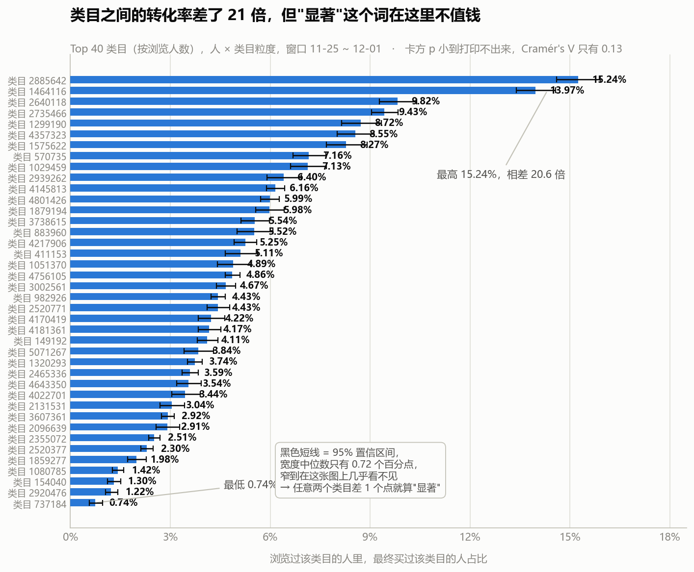
按浏览人数取 Top 40 类目，转化率的范围是：
| 转化率 | |
|---|---|
| 最低（类目 737184） | 0.74% |
| 最高（类目 2885642） | 15.24% |
| 相差 | 20.6 倍 |
同一个平台、同一个时间段、同一批用户，不同类目的转化率能差 20 倍。 这个差距大到不需要任何统计检验就能看出来。
顺便看一眼"加购含金量"
S3 提出过一个指标：加购者中的购买率（加购过的人里有多少真买了）。它在类目维度上同样拉开：
| 类目 | 浏览到购买率 | 加购者中的购买率 |
|---|---|---|
| 1464116 | 13.97% | 19.84% |
| 2735466 | 9.43% | 17.72% |
| 2920476 | 1.22% | 4.44% ← 最低 |
| 1080785 | 1.42% | 5.55% |
两个指标是同向的：浏览转化率低的类目，加购含金量也低。这说明这两个指标测的其实是同一件事——这个类目的用户是不是真的来买东西的。如果某个类目浏览转化率高但加购含金量低，那才是有意思的异常；这里没有。
2. 卡方检验：p 值小到打印不出来
现在做标准的独立性检验："类目"和"买不买"这两件事，到底相不相关？
检验用的是一张 40 × 2 的列联表（40 个类目 × 买过 / 没买过），总样本 612,194 个"人 × 类目"配对。
| 指标 | 值 |
|---|---|
| 卡方统计量 | 10,699.2 |
| 自由度 | 39 |
| p 值 | 0.000e+00（小到打印不出来） |
| Cramér's V（效应量） | 0.1322 |
p 值小到连科学计数法都打不出来了。按教科书说法，这叫"极其显著"，结论是"类目和购买行为高度相关"。
这个结论是废话。 因为 p 值回答的问题是"这个差异有没有可能是抽样偶然造成的"。当样本量是 61 万的时候，哪怕是 0.1 个百分点的差异，也不可能是偶然造成的——p 值必然极小，它在这里不提供任何信息。
这是大样本分析里最容易踩的坑：把"显著"当成"重要"。
换个说法就清楚了：p 值低只说明"差异是真的"，不说"差异值得管"。 一个 61 万样本的 A/B 实验，转化率从 5.00% 提升到 5.05%，p 值同样会小到打印不出来——但这个提升没有任何业务价值。
规矩：只要样本量上万，报差异就必须同时报效应量和绝对差距，只报 p 值的分析不能拿去开会。
那 Cramér's V = 0.13 是什么水平？弱关联。
但这里必须补一句诚实的话：Cramér's V 的"0.1 弱 / 0.3 中 / 0.5 强"这套基准值，是按小表（2×2 之类）定的。
40 行 × 2 列的表，V 的理论上限本身就不到 1，直接套那套基准并不严格。所以我不拿 0.13 去说"关联强度是弱的多少级"，我只用它说明一件事：类目不是购买行为的决定性因素——如果类目是决定性的，V 会接近它这个表型的上限，不会停在 0.13。
诚实地交代方法的适用边界，比硬套一个漂亮的数字更重要。
3. 为什么"显著"在这里不值钱：看看置信区间有多窄
见上图那些几乎看不见的黑色短线。
每个类目转化率的 95% 置信区间宽度：
| 宽度 | |
|---|---|
| 中位数 | 0.72 个百分点 |
| 最大 | 1.31 个百分点 |
任意两个类目的转化率，只要差超过 1 个百分点，卡方就会判定为"显著"。
再对照第 1 小节那张表：类目之间的差距是从 0.74% 到 15.24%。也就是说：
真正的差距（20 倍）比"显著"的门槛（1 个百分点）大了两个数量级。
所以我前面说"p 值小到打印不出来"，它的真实含义是：这么窄的置信区间，这么宽的类目差距，p 值不可能是大的。 这早就是已知的事情了，检验没有带来任何新信息。
4. 真正该问的问题：这个差异稳定吗
p 值回答不了"值不值得管"，效应量回答得也不彻底。真正决定这个结论能不能用的，是复现性。
做法：把 7 天窗口切成前后两半（前半段 11-25 ~ 11-28，后半段 11-29 ~ 12-01），分别算每个类目的转化率，看两次算出来的是不是同一件事。
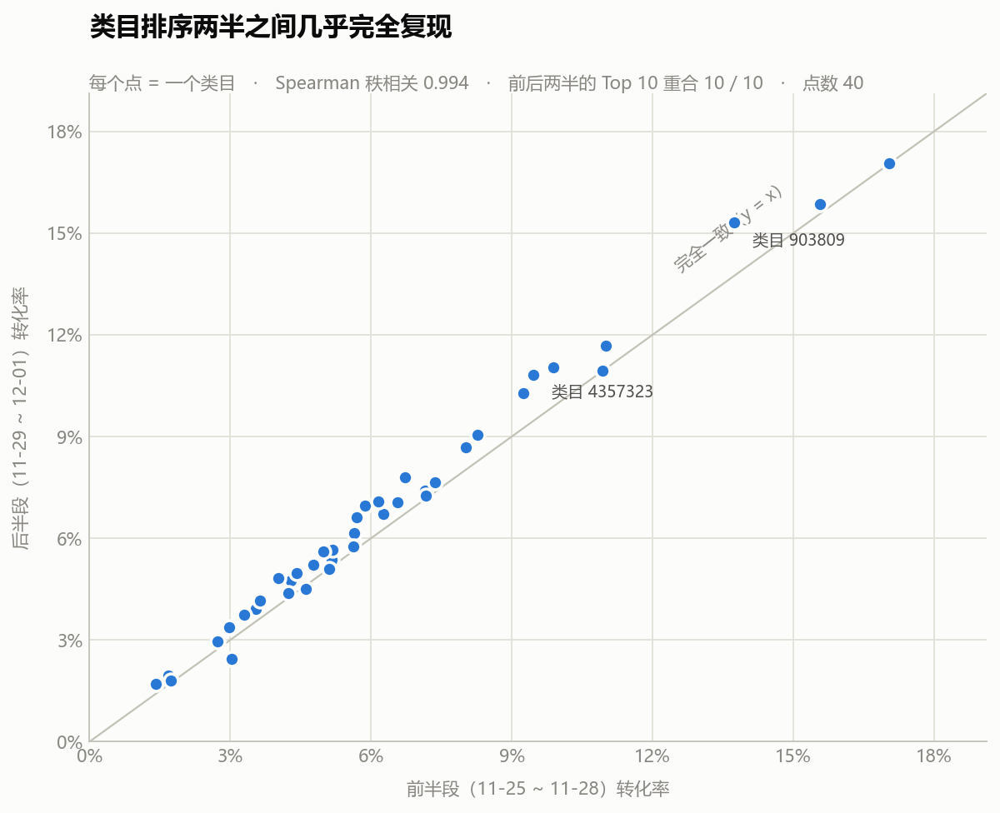
| 稳健性指标 | 值 |
|---|---|
| Spearman 秩相关（前后两半的排序一致性） | 0.994 |
| Pearson 相关 | 0.994 |
| 前后两半"转化率 Top 10"的重合个数 | 10 / 10 |
几乎完全复现。 前后两段只有 4 天左右的数据，样本各自小了一半，但类目的转化率排序几乎一模一样，Top 10 一个不差。
（图上离对角线最远的两个点，偏差也只有 1~2 个百分点。）
所以这一节的结论是
类目之间的转化率差异是真实且稳定的——不是抽样噪声，也不是某种算法造成的假象。
因此"按类目定 KPI"这件事是有依据的。
但这个依据不是来自 p 值。 p 值只说了"差异存在"，而"差异存在"我第 1 小节肉眼就看出来了。让我敢下结论的是第 4 小节——同样的差异，换个时间窗口还能原样算出来。
这就是"显著 ≠ 有用"的完整答案：显著只保证差异不是巧合，复现性才保证差异是可依赖的规律。
5. 一个必须说的限制：这 40 个类目只占四分之一
| 范围 | 占全部浏览人次 |
|---|---|
| Top 20 | 24.39% |
| Top 100 | 48.98% |
| Top 500 | 74.45% |
数据里出现过 7,775 个类目（有浏览的 7,706 个，有购买的 4,619 个）。
Top 20 只覆盖了不到四分之一的浏览人次，Top 100 也才刚刚过半。 这是一条极长的长尾。
所以：
本节的结论只适用于流量最大的那几十个类目。 长尾里的几千个类目，转化率可能和头部完全不同，本数据没法给出可靠结论——它们单个的样本量太小，算出来的转化率会被抽样波动主导（这正是前面那个"CI 宽度"要提醒的事）。
如果要做长尾分析，正确做法是按类目流量分层（比如万级 / 千级 / 百级），而不是逐个类目排榜。
6. 一句人话结论
不同类目的转化率差了 20 倍（0.74% ~ 15.24%），卡方检验 p 值小到打印不出来，但真正说明问题的是另外两件事：效应量只有 0.13（类目不是决定因素）、95% 置信区间只有 0.72 个百分点（"显著"的门槛低得没有决策价值）。而分半复现的秩相关 0.994、Top 10 完全重合，说明这个差异是真实稳定的——按类目定 KPI 有依据，但这个依据来自复现性，不是来自 p 值。
7. 面试可以这么说
"这一步我想看不同类目的转化率差多少。跑出来最大 15.24%、最小 0.74%，差 20 倍。然后我做了卡方检验，61 万个'人 × 类目'配对，p 值小到连科学计数法都打不出来。
但我没有停在这里，因为这个 p 值没有信息量。 p 值回答的是'差异会不会是抽样偶然造成的'——样本量 61 万的时候，0.1 个百分点的差异都不可能是偶然，所以 p 值必然极小。我算了一下效应量 Cramér's V，只有 0.13，说明类目不是购买行为的决定性因素。同时我算了每个类目转化率的 95% 置信区间，宽度中位数只有 0.72 个百分点——意味着任意两个类目差 1 个点就算'显著'，而实际差距是 20 倍。'显著'这个门槛在这里低得没有任何决策价值。
那到底该不该按类目定 KPI？我去做了复现性检验：把 7 天窗口切成前后两半分别算，Spearman 秩相关 0.994，前后两半的 Top 10 类目一个不差。所以差异是真实且稳定的，按类目定 KPI 有依据——但这个依据来自复现性，不是来自 p 值。
这一节的收获是一条纪律：样本量上万之后，报差异必须同时报效应量和绝对差距，只报 p 值的分析不能拿去开会。
最后我补了一个限制：这 40 个类目只占了不到一半的浏览人次，数据里总共有 7,775 个类目，长尾极长。所以我的结论只适用于头部类目，长尾类目单个样本量太小，算出来的转化率会被抽样波动主导。"
8. 局限
- 结论只覆盖头部类目。 Top 20 占浏览人次 24.39%，Top 100 占 48.98%。数据里共 7,775 个类目，长尾部分本数据无法给出可靠结论。做长尾应改用分层方法，不逐个排名。
- Cramér's V 的强度基准不适用于 40 行的表。 本文只用它说明"类目不是决定性因素"，不用它标注关联强度的等级。
- 卡方检验假设各观测独立。 但同一个人会浏览多个类目，这些观测并不严格独立（存在个体效应）。因此 p 值偏向于更小——这正好又一次说明本节的 p 值不能当证据用。要严格处理应改用混合效应模型或按用户聚类稳健标准误。
- 类目 ID 没有名称。 数据集只给了 category_id，没有类目名称，所以只能说"类目 2885642"，无法给出业务上可读的品类名。这是数据本身的信息缺失，不是我漏了。
- 窗口只有 7 天（已剔除异常的 12-02/12-03）。类目转化率可能随季节变化，本节的数值只代表这一周。
- 转化率绝对值普遍偏高（受 S1 的筛选影响），只能做类目之间的横向比较，不能和真实业务对标。
S7 · 用户分层：活跃的人和买单的人，不是同一批
对应脚本：
sql/sql_07_segments.sql（5 个结果集）
对应图：output/charts/s7_contribution.png、s7_robustness.png
到这一步，前六节已经把这个平台的用户画像拼得差不多了：逛多买少、购物车是比价清单、几乎天天来、回购不买同一件、类目差异巨大。
这一节换个切法：能不能把用户按活跃程度分成几层？运营资源该押在哪一层？
我本来以为这会是一个常规的分层分析——毕竟上一个 RFM 项目里，"少数人贡献多数营收"是核心结论。结果这一节最值钱的地方，恰恰是这个结论没有迁移过来。
1. 怎么分层：三分位，以及一个必须交代的平局问题
分层依据：每个用户在观察窗内的行为记录总数（不用金额——这份数据没有金额字段）。
切法是三分位（各层人数尽量均等），不是拍脑袋定阈值。
| 切分点 | 值 |
|---|---|
| 三分之一分位点 | 32 |
| 三分之二分位点 | 80 |
结果：
| 分层 | 人数 | 行为数下限 | 行为数上限 | 人均行为数 |
|---|---|---|---|---|
| 1 轻度 | 33,738 | 1 | 32 | 16.9 |
| 2 中度 | 32,585 | 33 | 80 | 53.6 |
| 3 重度 | 32,695 | 81 | 662 | 151.2 |
两个必须交代的细节
第一，切分点撞上了平局。
两个分位点都是整数（32 和 80），意味着有大量用户的行为数正好是 32 或 80。分位数落在一堆相同的值上，就不能把人群切成完全相等的三份。
实际结果：最大一层 33,738 人，最小一层 32,585 人，相差 3.5%。
这是我在 RFM 项目里踩过的坑——用
qcut按金额分箱时，大量用户金额相同会导致分箱边界报错或分层严重不均。这次的偏差只有 3.5%，不影响任何结论，但必须写出来：不交代分层是否均匀，等于隐瞒了分层方法可能失效这件事。
第二，有 2 个用户不在任何一层里。
三层加起来 99,018 人，而全体是 99,020 人。差的这 2 个用户，在 11-25 ~ 12-01 这个观察窗里没有任何行为——他们只在被剔除的 12-02 / 12-03 出现过。这和 S3 查到的"12-02 当天的活跃用户里只有 2 个是新面孔"正好对上。
2. 三层的画像
| 指标 | 轻度 | 中度 | 重度 |
|---|---|---|---|
| 人数 | 33,738 | 32,585 | 32,695 |
| 人均活跃天数 | 3.70 | 5.34 | 6.29 |
| 人均碰过的商品数 | 14.4 | 42.7 | 113.7 |
| 购买渗透率 | 40.20% | 60.73% | 73.77% |
| 加购渗透率 | 46.55% | 72.15% | 83.58% |
| 收藏渗透率 | 19.08% | 35.30% | 50.12% |
方向很干净：越活跃的人，碰过的商品越多，买过的比例也越高。 购买渗透率从 40.20% 一路升到 73.77%。
到这里都符合直觉。但下面这张表是反的。
| 分层 | 浏览占比 | 加购占比 | 收藏占比 | 购买占比 |
|---|---|---|---|---|
| 1 轻度 | 86.27% | 6.90% | 2.66% | 4.17% |
| 2 中度 | 88.33% | 6.27% | 2.74% | 2.66% |
| 3 重度 | 90.34% | 5.05% | 3.00% | 1.61% |
这是每一层自己行为里的构成比例。
重度用户的行为里，只有 1.61% 是购买；轻度用户有 4.17%。 越是重度用户，浏览占的比重越高（86.27% → 90.34%），购买占的比重越低。
所以"重度用户"是"逛得多"的人，不是"买得多"的人。 他们每天来，翻很多商品，但真正下单的比例反而更低。
这已经预告了下一小节的结论。
3. 核心发现：行为量的集中度，远高于购买量的集中度
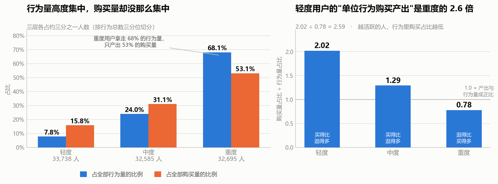
看三层各自贡献了多少：
| 分层 | 人数占比 | 行为量占比 | 购买量占比 | 加购量占比 | 卖出商品数占比 |
|---|---|---|---|---|---|
| 1 轻度 | 34.07% | 7.84% | 15.84% | 9.86% | 16.96% |
| 2 中度 | 32.91% | 24.04% | 31.05% | 27.45% | 31.62% |
| 3 重度 | 33.02% | 68.12% | 53.11% | 62.70% | 51.42% |
重度用户（约三分之一的人）拿走了 68.12% 的行为量，却只产出 53.11% 的购买量。
行为量的分布是 7.8 / 24.0 / 68.1——极度向头部集中。购买量的分布是 15.8 / 31.1 / 53.1——集中度明显低得多。
把它做成一个比率就更清楚了：
| 分层 | 购买量占比 ÷ 行为量占比 | 含义 |
|---|---|---|
| 1 轻度 | 2.02 | 每一份行为，产出 2 份购买份额 |
| 2 中度 | 1.29 | 略高于正比 |
| 3 重度 | 0.78 | 每一份行为，产出不到 1 份购买份额 |
| 1.0 | — | 产出与行为量成正比（基准线） |
轻度用户的"单位行为购买产出"是重度用户的 2.6 倍（2.02 ÷ 0.78 = 2.59）。
换句话说：重度用户贡献了 68% 的流量，但只贡献了 53% 的成交。他们更多地"在逛"，而不是更多地"在买"。
这里有一件我差点写错的事
我本来准备写："这个结果和 RFM 项目里的'VIP 29% 的人贡献 75% 营收'正好相反。"
这句话是错的，两个数不能直接比。
原因是口径：
| RFM 项目 | 本节 | |
|---|---|---|
| 统计对象 | 金额（营收） | 笔数（购买事件数） |
| 单位 | 元 | 次 |
金额的集中度天然高于笔数的集中度。 因为高价值客户不只是"买得多"，他们还"买得贵"——两个效应叠加，金额集中度自然比笔数集中度更极端。
所以严格说，我不能断言"行为数据上的集中度更低"。我能说的只有：
在"笔数"这个口径下，购买量的集中度是 53.1%（重度用户占比），而不是 75%。而且行为量的集中度（68.1%）显著高于购买量的集中度。
这个修正很重要。 跨项目对比之前，必须先对齐口径——不然很容易得出一个听起来很有冲击力、但其实是"苹果比橘子"的结论。
这也是这一节我最想记下来的一条：不要因为"我上个项目算出过 X"，就期待这个项目也能算出 X。 上一个项目的结论是这个项目的先验假设，不是这个项目的答案——而且往往正是那个先验，会让你在数据已经给出不同答案的时候，还硬把它读成 X。
这里我差点就这么做了。救回来的是"把两个数字的单位写下来"这个动作。
4. 换个分层标准，结论还站得住吗
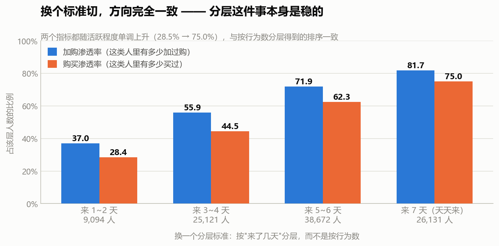
前面按"行为记录总数"分层，隐含一个假设：行为多 = 活跃。但一个人可能一天来一次、每次做 100 个动作，也可能天天来、每次只做几个动作。
所以换一个标准：按"来了几天"分层（这直接对应 S4 的活跃天数）。
| 按活跃天数分层 | 人数 | 加购渗透率 | 购买渗透率 |
|---|---|---|---|
| 来 1~2 天 | 9,094 | 37.01% | 28.45% |
| 来 3~4 天 | 25,121 | 55.85% | 44.45% |
| 来 5~6 天 | 38,672 | 71.87% | 62.34% |
| 来 7 天（天天来） | 26,131 | 81.71% | 75.03% |
两个指标都随活跃程度单调上升，方向和按行为数分层完全一致。
所以"用户能按活跃程度分层"这件事本身是稳的——不管用哪个指标切，排序都是同一个。
这是本项目第四次做稳健性检验（前三次：S2 的 SKU 放宽、S4 的分半留存、S6 的分半复现）。换一个角度算，结论还成立，才敢下结论——这已经成了这个项目的标准动作。
5. 对运营意味着什么
这一节给出的结论，其实推翻了"把资源押给重度用户"这个常识：
重度用户不是"高价值用户"，是"高流量用户"。 他们贡献了 68% 的行为量，但只贡献 53% 的购买量，单位行为的购买产出是轻度用户的一半不到。把预算投给他们是"买流量"，不是"买成交"。
轻度用户被低估了。 他们只占 7.84% 的行为量，却贡献了 15.84% 的购买量。人数占三分之一，样本不小，值得单独做策略。
但要小心一个反向的解释：轻度用户"购买产出高"，也可能是因为他们本来就没怎么逛——总共就 16.9 次行为，其中 4.17% 是购买，说明他们是目标明确型用户：来了就买，买完就走。这不是"价值高"，是行为模式不同。
所以这一节的结论应该表述成行为模式差异，而不是价值高低：
重度用户 = 逛型（来得多，买得相对少）；轻度用户 = 买型（来得少，来了就买）。
这两类人要的是完全不同的东西：逛型用户需要的是更短的决策路径（帮他把"逛"变成"买"），买型用户需要的是更高的回访频次（他已经证明了自己会买，只是来得少）。
6. 一句人话结论
按行为量把用户分成三层后，重度用户拿走了 68.12% 的行为量，却只产出 53.11% 的购买量；轻度用户的"单位行为购买产出"是重度的 2.6 倍（2.02 对 0.78）。越活跃的人，行为里购买占的比例越低（4.17% → 1.61%）。 所以在这份数据里，"活跃"和"买单"是两件事——重度用户是逛型，轻度用户是买型。
7. 面试可以这么说
"这一步我按行为量做了三分位分层，切出轻中重三层各约三分之一。分位点落在 32 和 80，正好都在一堆相同值上，所以三层人数差了 3.5%，没有严格等分——这个我写进文档了，不交代分层是否均匀等于隐瞒了方法可能失效。
三层的购买渗透率是单调的：40.2% → 60.7% → 73.8%，越活跃买过的比例越高，符合直觉。但我又看了一眼每层自己行为里的构成比例，发现是反的：轻度用户的行为里 4.17% 是购买，重度只有 1.61%。也就是说重度用户是'逛得多'，不是'买得多'。
顺着这个看贡献份额，结论就清楚了：重度用户拿走 68.1% 的行为量，只产出 53.1% 的购买量；轻度用户只占 7.8% 的行为量，却贡献 15.8% 的购买量。做成比率，轻度用户的单位行为购买产出是 2.02，重度是 0.78，差 2.6 倍。
这里我差点写错一个地方。 我本来想写'这和上一个 RFM 项目里 VIP 29% 贡献 75% 营收正好相反'——但这两个数不能比。RFM 那个是金额份额，我这里是笔数份额，金额的集中度天然比笔数高，因为高价值客户不只是买得多，还买得贵。跨项目对比之前必须先对齐口径，不然会得出一个听着有冲击力、其实是苹果比橘子的结论。
最后我做了稳健性检验，换成按'来了几天'分层，两个指标的排序完全一致——所以分层这件事本身是稳的。
这一节的结论我表述成行为模式差异而不是价值高低：重度用户是逛型，轻度用户是买型。逛型要的是更短的决策路径，买型要的是更高的回访频次，这两类人的策略方向是相反的。"
8. 局限
- 分层依据是"观察窗内的行为量"，不是全生命周期。 窗口只有 7 天（已剔除异常的 12-02/12-03），所以"重度用户"只是这 7 天里来得勤的人，不代表长期高活跃。
- 三层人数不完全相等（相差 3.5%）。 分位点（32、80）落在大量相同的值上，无法严格等分。偏差很小，但必须交代。
- 有 2 个用户不属于任何一层（99,018 对 99,020），因为他们只在被剔除的 12-02/12-03 有行为。
- 第 3 小节的贡献份额不能和 RFM 项目的金额集中度直接比较。 一个是笔数口径，一个是金额口径，金额集中度天然更高。本节的比较一律在笔数口径内部进行。
- "轻度用户购买产出高"存在另一种解释：他们行为少，可能只是"目标明确、买完就走"，不是"价值更高"。本节据此把结论表述为行为模式差异，而非价值高低。
- 购买渗透率普遍偏高（受 S1 的筛选影响），只能做层间横向比较，不能与真实业务对标。
- 没有做因果推断。 "重度用户购买占比低"是描述性观察，不能反过来说"让他少逛就能提高购买率"。
S8 · 行为路径：加购不是扳机，是意向的标记
对应脚本：
sql/sql_08_paths.sql（7 个结果集）、code/08_build_sessions.py（会话切分）、
code/08b_robustness.py/08c_transitions.py/08d_buy_position.py（三项补充检验）
对应图：output/charts/s8_session_depth.png、s8_transition.png、s8_cart_afterlife.png
前面七节看的都是汇总层面的数：多少人浏览、多少人加购、留存几成、类目差多少倍。
这一节换到事件流层面：把每个用户的行为按时间串起来，还原出"一次逛"的完整过程，然后问一个前面几节都回答不了的问题——
逛的过程中，做到哪一步的人会买？加购之后那一下，到底发生了什么？
结论和前面七节攒下来的直觉是反的。 这也是整个项目里我自己推翻自己最狠的一节。
1. 先交代口径：会话是我造的，不是数据给的
这份数据里没有会话 ID。
原始表只有五列：用户、商品、类目、行为、时间戳。没有任何字段告诉你"这几条行为属于同一次访问"。
所以在分析之前，必须先自己造一个会话的定义：
同一个用户，相邻两条行为的时间间隔超过 30 分钟，就算新开了一个会话。
30 分钟是电商行业的惯例阈值，但必须说清楚：它是我定的，不是数据给的。
一个自己定义的口径，如果不去检验它，它就会变成整个分析里最脆弱的那一环。
所以这一节专门安排了结果7 和一项补充检验：把阈值换成 15 分钟和 60 分钟各算一遍，看结论会不会翻盘。如果不做这个检验，下面所有的数都只是"在某个特定阈值下成立"。
还有两个必须交代的处理：
- 排序键固定为
(时间戳, 商品, 行为)。 时间戳只精确到秒，同一秒内会有多条行为。如果只按时间戳排序，同一份数据跑两次，会话内部的行为顺序可能不一样——那"行为路径"这个词就成了随机数。 加上后两级排序键才能保证可复现。 - 观察窗截到 12-01。 12-02 和 12-03 是 S3 查实的数据异常日（活跃覆盖率从 72~75% 跳到 98%），已剔除。
会话切分算一次不便宜（726 万行要按用户排序 + 跑窗口函数），所以先物化成一个 parquet 表（code/08_build_sessions.py），后面每个查询直接读，避免同一个窗口在每个结果集里重算一遍。
中间踩了一个性能坑，记在这里： 频率最高的会话序列那一问，第一版写成了"先把所有会话的行为拼成字符串、再筛长度"，120 万组 × 726 万行跑了 5 分钟都出不来。改成先用会话长度把行数筛下来（只剩 21 万个会话）再聚合，2.7 秒出结果。在 SQL 里，"先聚合再筛"和"先筛再聚合"经常差上百倍。
2. 一次"逛"长什么样
| 指标 | 值 |
|---|---|
| 会话总数 | 1,217,569 |
| 有会话的用户数 | 99,018 |
| 人均会话数 | 12.3 |
| 平均每会话行为数 | 5.96 |
| 会话行为数中位数 | 3 |
| 平均会话时长 | 11.57 分钟 |
| 会话时长中位数 | 3.42 分钟 |
会话长度的分布极度偏斜：
| 一个会话里有几个行为 | 会话数 | 占比 |
|---|---|---|
| 1 | 378,557 | 31.09% |
| 2~3 | 298,331 | 24.50% |
| 4~10 | 348,643 | 28.63% |
| 11~30 | 164,672 | 13.52% |
| 31~100 | 26,878 | 2.21% |
| 100 以上 | 488 | 0.04% |
近三分之一（31.09%）的会话只有一个行为，中位数只有 3 个行为、3.42 分钟。平均数是 5.96 和 11.57 分钟——被少数超长会话拉高了，中位数才是大多数人的体验。
这也是本项目里第三次遇到同一件事：平均数和"大多数人"不是一回事。 前两次是 S1 的"68% 用户有购买行为"（样本被筛选过，平均数失真）和 S5 的"购买记录数 vs 购买天数"（口径不同，结论差 13.73 个点）。
3. 三分之二的会话，逛完什么意向动作都没留下
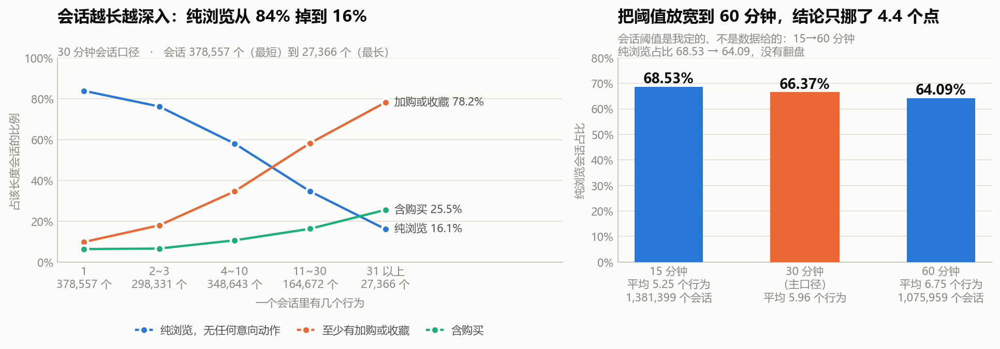
把会话按长度分成五档，看每一档里有多少会话产生了意向动作（加购 / 收藏）或成交：
| 会话行为数 | 会话数 | 纯浏览，无任何意向动作 | 含加购 | 至少有加购或收藏 | 含购买 |
|---|---|---|---|---|---|
| 1 | 378,557 | 83.84% | 6.57% | 9.81% | 6.35% |
| 2~3 | 298,331 | 76.15% | 12.59% | 17.98% | 6.63% |
| 4~10 | 348,643 | 57.98% | 24.65% | 34.63% | 10.64% |
| 11~30 | 164,672 | 34.61% | 42.38% | 58.24% | 16.29% |
| 31 以上 | 27,366 | 16.11% | 58.43% | 78.18% | 25.54% |
加权汇总：全部 1,217,569 个会话里，66.37% 是纯浏览——没有加购、没有收藏、没有购买，什么都没有。
但"会话越长越容易成交"这句话要先打个折
表里右边两列是单调上升的（含购买从 6.35% 涨到 25.54%），看起来像"逛得越久越容易买"。
这个关系不能当发现讲。 会话越长 = 行为越多 = 撞上购买的机会本来就越多，这是构造决定的。就像说"买彩票张数多的人中奖率高"——是对的，但没有信息量。
我把它写进图里当反面教材了：看到一个单调关系，先问一句"这个方向是不是被定义推出来的"。
真正算数的是这一列：纯浏览占比，且它不怕换阈值
左边那列（纯浏览）从 83.84% 掉到 16.11%，它不依赖任何"机会数"的机制——一个会话要么留下了意向动作，要么没有。而它的整体水平（66.37%）经得起换阈值：
| 会话阈值 | 会话数 | 平均每会话行为数 | 单行为会话占比 | 纯浏览会话占比 |
|---|---|---|---|---|
| 15 分钟 | 1,381,399 | 5.25 | 33.94% | 68.53% |
| 30 分钟（主口径） | 1,217,569 | 5.96 | 31.09% | 66.37% |
| 60 分钟 | 1,075,959 | 6.75 | 28.33% | 64.09% |
把阈值从 15 分钟一路放宽到 60 分钟——也就是把同一个人一小时内所有的行为尽量并成一个会话——纯浏览占比只从 68.53% 挪到 64.09%，差 4.44 个点，没有翻盘。
所以"大部分会话是纯浏览"这件事是数据本身的性质，不是我把阈值切太碎切出来的。（这是本项目第五次稳健性检验，前四次：S2 的 SKU 放宽、S4 的分半留存、S6 的分半复现、S7 的换分层标准。）
最常见的会话序列也印证这一点。长度 4~6 的会话里，排名前三的序列是：
| 行为序列 | 序列长度 | 出现会话数 | 占同长度会话比例 |
|---|---|---|---|
pppp | 4 | 59,075 | 66.86% |
ppppp | 5 | 42,310 | 61.55% |
pppppp | 6 | 31,777 | 58.23% |
（p=浏览、c=加购、f=收藏、b=购买。序列里的第 4 名只有 3,295 个会话，和第 1 名差了 18 倍——纯浏览会话不只是最多的，是碾压式的最多。）
这里有一个我第一版算错、复查时删掉的东西。 第一版我在这张表里加了一列"该序列的成交率"，跑出来全是 0% 或者 100%。
原因：一个序列里只要含
b，成交率就是 100%；不含就是 0%。它不是转化率，是"这个序列包不包含 b"的恒等式。 分组变量（序列）和结果变量（含不含购买）在构造上重叠了——和 S5 那张"回购用户特征表"是同一类错误（那次的变量是"买了同款"和"回购"，也是同一份数据推出来的两个数）。所以这次直接不产出这个数。
4. 核心发现：加购之后的下一步，最不可能是购买
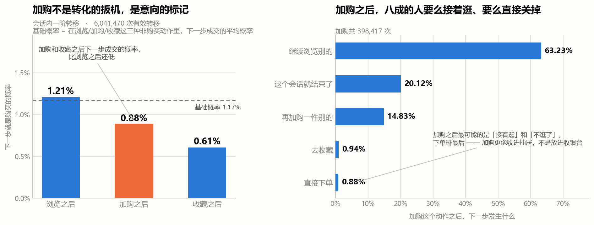
前面 S2 说过"一旦加购，回返率高"。那是七天窗口的口径——在七天内买回自己加购过商品的人占 31.13%。
这一节换成完全不同的问法：
在会话里，站在"加购"这个动作上，下一个动作是购买的概率是多少？
统计了 604 万次有效的会话内一阶转移：
| 当前动作 | 出现次数 | 下一步浏览 | 下一步加购 | 下一步收藏 | 下一步购买 | 会话结束 |
|---|---|---|---|---|---|---|
| 浏览 | 6,499,835 | 76.78% | 3.97% | 2.02% | 1.21% | 16.02% |
| 加购 | 398,417 | 63.23% | 14.83% | 0.94% | 0.88% | 20.12% |
| 收藏 | 211,156 | 63.82% | 1.78% | 17.11% | 0.61% | 16.69% |
| 购买 | 149,631 | 40.29% | 2.61% | 1.15% | 15.28% | 40.68% |
基础概率（在浏览/加购/收藏这三种"非购买"动作里，下一步成交的平均概率）= 1.17%。
加购之后下一步就买的概率是 0.88%——比浏览之后的 1.21% 还低，也低于基础概率 1.17%。
加购和收藏，是这张表里"下一步成交概率"最低的两个动作。
换句话说：你站在一个刚加购的人面前，他下一步下单的概率，比你随便抓一个正在浏览的人还低。
为什么？看右图——加购之后的下一步到底干嘛去了：
| 加购之后下一步 | 占比 |
|---|---|
| 继续浏览别的 | 63.23% |
| 这个会话就结束了 | 20.12% |
| 再加购一件别的 | 14.83% |
| 去收藏 | 0.94% |
| 直接下单 | 0.88% |
加购之后最常见的是"接着逛"（63.23%）和"不逛了"（20.12%），加起来八成三。 下单排最后。
还有两个细节值得记：
- 加购 → 再加购一件别的有 14.83%，是"非浏览"里最高的一项。用户在连续往购物车里放东西，而不是推着购物车去结账。
- 收藏 → 加购只有 1.78%，加购 → 收藏只有 0.94%。 这两个动作基本是两条平行路径，不互相转换。
所以加购在这份数据里的角色，接近"收藏夹"，而不是"收银台"。
它不是转化的扳机，是意向的标记——它标记了一个"我考虑过"的状态，但这个状态本身不推动下一步动作。
这和 S2 的结论矛盾吗？不矛盾，是两个不同的问法
| S2 的问题 | S8 的问题 | |
|---|---|---|
| 问法 | 加过购的人，七天内有多少买了他加购的东西？ | 加购这个动作的下一步，是购买的概率多大？ |
| 口径 | 人 × 商品，跨会话，七天窗口 | 动作 × 动作，会话内，相邻 |
| 结果 | 31.13%（人数口径）/ 6.21%（商品项口径） | 0.88% |
两个都成立。 加购和"最终会买"确实相关（S2 的 6.21% 远高于随便一个商品的成交率）——但加购和"马上会买"负相关。
这两个数字放在一起才是完整的：加购标记的是"这个人有兴趣"，不是"这笔单快成了"。
把它们混为一谈，就会得出"加购是转化漏斗的最后一环、应该加大力度推动加购"这种结论——而数据显示加购之后的即时转化率是所有动作里最低的。
5. 那加购的转化到底发生在什么时候
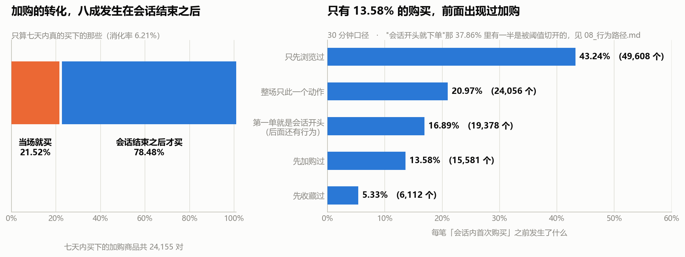
顺着上面那个问题往下查：七天内被买下的加购商品，是在加购的当场买的，还是之后才买的？
| 口径 | 对数 | 消化率 |
|---|---|---|
| 单会话内（人, 会话, 商品） | 395,887 | 1.38% |
| 全窗口（人, 商品，七天） | 389,170 | 6.21% |
在七天内真的被买下的 24,155 对加购商品里：
| 时间归属 | 对数 | 占比 |
|---|---|---|
| 当场就买（同一会话内） | 5,198 | 21.52% |
| 会话结束之后才买 | 18,957 | 78.48% |
加购带来的成交，将近八成发生在这次会话结束之后。
这一条直接改变了加购这个指标的用法：如果拿"加购当天的成交率"去考核运营动作，会系统性低估加购的价值——因为四分之三的效果在当天根本还没发生。
反过来，如果拿"七天成交率"去评估，又会高估"加购之后立刻推一把"的空间——真正该做的是"把加购商品在后面的会话里重新送到他面前"，而不是"在他加购的那一刻催他下单"。 这正是 S9 要做的事。
6. 购买之前发生了什么：两个我算错又改回来的地方
最后一个问题：会话里的第一笔购买，之前那一步是什么？
| 第一单之前发生了什么 | 会话数 | 占比 |
|---|---|---|
| 只先浏览过 | 49,608 | 43.24% |
| 整场只此一个动作（进来就买，只有这一下） | 24,056 | 20.97% |
| 第一单就是会话开头（后面还有行为） | 19,378 | 16.89% |
| 先加购过 | 15,581 | 13.58% |
| 先收藏过 | 6,112 | 5.33% |
只有 13.58% 的购买，前面出现过加购。 这和上一节的结论是一致的：加购是意向标记，不是转化的必经环节。
错误一：CASE 少写了一类，16.89% 掉进了"其它"
第一版跑出来，"其它"那一档有 16.89%——太大了，不可能真的是"其它"。
我去查了具体的会话，发现是这样一种情况：买 → 浏览 → 浏览。购买是这个会话的第一个动作，但会话本身不止一个动作。 而我的 CASE 写的是"如果会话长度是 1 就算直接下单"，于是这类会话既不满足"长度 1"，也找不到"购买之前的行为"（因为确实没有），全部掉进了兜底分支。
修法是把判断条件从"会话长度"改成"购买之前有没有行为"，这样 买 → 浏览 和 买（单独一个动作）就被正确分开了。
教训：兜底分支（
ELSE '其它'）的比例一旦超过 5%，就不该继续往下走。 一个设计良好的分类里，"其它"应该是零头。它变大了，说明分类方案本身和数据的形态对不上。
错误二："进来直接下单"里，有一半是阈值切出来的假象
看表里第二、三行：20.97% + 16.89% = 37.86% 的购买，前面一个行为都没有。
这个数字很可疑。它和"用户会先逛再买"的常识冲突。我怀疑它不是行为特征，是会话切分切出来的：一个人 10:00 浏览、10:45 下单，间隔超过 30 分钟被切成两个会话，下单那个自然显得"进来就买"。
验证方法是换阈值：
| 会话阈值 | "第一单是会话开头"的占比 |
|---|---|
| 15 分钟 | 43.81% |
| 30 分钟（主口径） | 37.86% |
| 60 分钟 | 33.49% |
阈值一放宽，占比就往下掉——确实是切分切出来的。
但它没有掉到零。60 分钟口径下还剩 33.49%。于是一路追下去：
- 60 分钟口径下，"第一单是会话开头"的有 37,549 个
- 其中 19,789 个（52.70%）当天更早还活动过——只是中间隔了一个多小时，被切到别的会话里去了
- 剩下的 17,760 个（占该口径全部首单的 15.84%），当天更早完全没有活动过
最终落点：大约六分之一的购买，是"打开就直接买"，在此之前一整天都没在这个平台上出现过。
这类购买大概率是再次购买、从购物车直接结算、或者从推送/短信直达商品页——但这份数据里没有入口来源字段，我无法区分是哪一种，所以不猜。
能说的是：它是一个真实存在的、占比 15.84% 的行为模式，而不是切分假象。 剩下的 84.16%，前面都有浏览行为。
7. 一句人话结论
把行为按时间串成"会话"之后，66.37% 的会话是纯浏览——没有加购、没有收藏、没有购买（换 15/60 分钟阈值结论不变，68.53% → 64.09%）。而最关键的一条是：加购之后下一步就购买的概率只有 0.88%，比浏览之后的 1.21% 还低，比"随便一个动作之后成交"的基础概率 1.17% 也更低。 加购之后最可能发生的是接着逛（63.23%）或者直接关掉（20.12%）。加购不是转化的扳机，是意向的标记——它标记"有兴趣"，但不推动下一步。与之配套的是：加购带来的成交，78.48% 发生在会话结束之后，只有 21.52% 是当场买的。
8. 面试可以这么说
"这一步是把行为还原成'一次逛'的过程。但这份数据里没有会话 ID，所以我必须自己定义一个——同一个人相邻两条行为间隔超过 30 分钟算新会话。关键是：这个 30 分钟是我定的，不是数据给的，所以我必须检验它。 我换成 15 分钟和 60 分钟各跑了一遍。
先说最稳的一个数：66.37% 的会话是纯浏览，什么意向动作都没有。 换阈值 15→60 分钟，这个数从 68.53% 到 64.09%，只挪了 4.4 个点——说明它是数据本身的性质，不是我阈值切太碎切出来的。
但真正让我改了看法的是转移概率。我统计了 604 万次会话内的行为转移，问：站在'加购'这个动作上，下一步是购买的概率有多大？答案是 0.88%。而站在'浏览'上是 1.21%，随机一个非购买动作的平均是 1.17%。
也就是说，加购之后下一步就买的概率，比随便抓一个正在浏览的人还低。 那加购之后在干嘛？63% 接着逛，20% 直接关掉，下单排最后。
这和我前面 S2 的结论看起来是矛盾的——S2 我说过'一旦加购回返率高'，七天内买回加购商品的人有 31%。但两个问法不一样：S2 问的是'加过购的人七天内会不会买回来'，这里问的是'加购这个动作的下一步是不是购买'。两个都成立：加购标记的是'有兴趣'，不是'快成交了'。把这两个混起来，就会得出'加购是漏斗最后一环、要加大力度促加购'这种结论——而数据显示加购之后的即时转化率是所有动作里最低的。
顺着查下去，加购带来的成交里，78.48% 发生在会话结束之后，只有 21.52% 是当场买的。所以拿'加购当天成交率'考核运营会严重低估加购的价值，因为它四分之三的效果当天还没发生。
最后一步的购买路径上我犯了两个错，都改回来了。第一个，我算过一列'序列成交率'，跑出来全是 0% 或 100%——因为序列里含不含'购买'这个字是构造决定的，它不是转化率，是恒等式，和 S5 那张回购特征表是同一类错误，所以我把这一列删了。第二个，我算出来 37.86% 的购买是'进来直接下单'，看着像重大发现，我怀疑是阈值切出来的，换阈值一验，从 43.81% 掉到 33.49%，确实是切分假象。但没掉到零，我又往下追了一层，把'当天更早还活动过'的剔掉，最后落在 15.84%——大约六分之一的购买是当天完全没来过、打开就买。这个数我不解释原因，因为数据里没有入口来源字段，区分不了是复购、购物车结算还是推送直达。"
9. 局限
- 会话是我自己定义的，不是数据给的。 30 分钟是行业惯例，但这个项目里它是我拍的板。已用 15/60 分钟做过稳健性检验（纯浏览占比 68.53% / 66.37% / 64.09%），主要结论不依赖阈值，但具体的会话数、人均会话数这些规模指标是阈值相关的，不能当成固定事实。
- 观察窗只有 7 天，窗口最后的那次会话一定被切断。 这会系统性低估长会话、低估会话内转化率。S8 的所有会话内指标都受这个影响，且无法修正——只能声明方向。
- "会话越长越容易成交"是机制性关系，不是发现。 行为多 = 触碰购买的机会多。本节只把"纯浏览占比"当作结论，因为那一列不依赖机会数。
- "加购之后下一步成交 0.88%"是即时转化口径，不等于加购的长期价值。 全窗口口径是 6.21%（商品项）/ 31.13%（人数）。这两个数必须成对出现，单独引用任何一个都会误导。
- 结果5 只保留长度 4~6 的会话序列。 长度 1~3 的会话序列种类太少（
p、pp、ppp）没有信息量，长度 7 以上的组合数爆炸、头部占比已经很低。这张表是"最常见的模式"，不是"全部路径的分布"。 - "购买之前发生了什么"只统计会话内的第一个购买。 会话长度只有 1 时（占 20.97%）"之前"这一栏是空的，不能解释成"没有浏览就买了"——它也可能是"上次会话浏览过、这次进来直接买"。这部分在 6.2 小节单独追过，落在 15.84%。
- 15.84% 这个数只说明"当天没有其他行为"，不说明入口来源。 数据里没有来源字段，区分不了复购、购物车结算、推送直达，所以不做归因。
- 没有做因果推断。 "加购之后成交率低"是描述性观察。不能反过来说"别让用户加购"或者"加购害了转化"——加购的人本来就和没加购的人不是同一批人（他们在认真考虑商品），这是选择效应，不是因果。
- 会话切分没有考虑跨设备、跨 App 的场景。 同一个人的行为可能被记成不同格式，但这份数据只有一个 user_id 维度，无法识别。
S9 · 加购召回：盘子有多大，什么时候打
对应脚本：
sql/sql_09_recall.sql（6 个结果集）
对应图：output/charts/s9_recall_pool.png、s9_recall_timing.png
S8 查出来一件事：加购带来的成交，78.48% 发生在会话结束之后，当场成交只有 21.52%。加购不是转化的扳机，是意向的标记。
那顺着往下就是运营问题了：
那些加了购物车却没买的人，值不值得捞？捞得回来多少？如果要捞，该在什么时候打？
这一节要给出一个能拿去开会讨论的答案。
0. 先立一条纪律：这一节不给金额
这份数据没有金额字段。 只有用户、商品、类目、行为、时间戳五列。
所以这一节的所有测算只用"件数"和"人数"。我不会写"能带来多少 GMV"，也不会乘客单价。
没有金额字段却给出"预计增收 XXX 万元"，是这类项目里最常见、也最容易被面试官一句话问穿的地方。 面试官只要问一句"客单价哪来的"，整个测算就塌了。
这一节的产出边界是：能多成交多少件、能触达多少人。到"值多少钱"为止，我不往下走——因为没有输入。
同理，这一节也算不出 ROI：券的成本、触达的成本、人力的成本，数据里一个都没有。只有"收益件数"没有"成本"，ROI 就是一个编出来的数。
1. 盘子有多大：九成四的加购商品，七天内没有成交
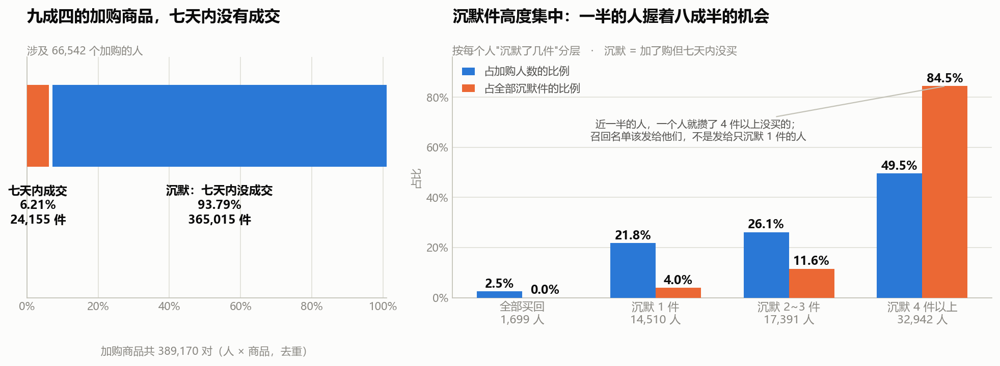
先把口径钉死：
- 一对 = 一个人 × 一个商品（去重）。同一个人同一件商品加购多次算一对。
- 买回 = 购买发生在加购之后。买在前、加在后不算买回（下面第 3 节会用到这个区别）。
- 窗口 = 11-25 ~ 12-01（7 天，已剔除异常的 12-02/12-03）。
| 指标 | 值 |
|---|---|
| 加购商品对 | 389,170 |
| 七天内买下的 | 24,155（6.21%） |
| 沉默加购对 | 365,015（93.79%） |
从人这一侧看：
| 指标 | 值 |
|---|---|
| 加购人数 | 66,542 |
| 有沉默件的人数 | 64,843 |
| 至少买回一件的人数 | 16,896 |
| 全部买回的人数 | 1,699 |
⚠️ 中间两行是重叠的——一个人完全可以既有买回的件、又有沉默的件。这两个数不能相加，加起来会得到 81,739，比总人数 66,542 还多。
只有最后一行"全部买回"是从总数里减出来的（66,542 − 64,843 = 1,699），那个才是不重叠的。
这是我第一版把标签写成"一件都没买回的人数"时差点犯的错：一个重叠的分类，两个分支加起来超过总数，就是一个必须立刻停下来检查的信号。
6.21% 这个数，和 S2 报的 6.47% 是同一件事（S2 没剔除 12-02/12-03，所以分母更大）。两个数互相印证，差在窗口。
和 S2 的一个口径差异，必须说明
S2 报的加购人数是 74,220，这一节是 66,542。差的 7,678 人只在 12-02/12-03 加过购——那两天是 S3 查实的数据异常日，本节剔除了，S2 没有。
再加上本节"买回"要求购买在加购之后（S2 没有这个约束），所以：
| S2 | S9 | |
|---|---|---|
| 窗口 | 11-25 ~ 12-03 | 11-25 ~ 12-01 |
| 加购人数 | 74,220 | 66,542 |
| 买回人数 | 23,107 | 16,896 |
| 买回率 | 31.13% | 25.39% |
这两个数不能互相印证，也不能同时引用。 报哪个都行，但必须把窗口和口径一起报。
2. 盘子握在谁手里：一半的人握着八成半的机会
把 66,542 个加购的人按"沉默了几件"分成四层：
| 分层 | 人数 | 人数占比 | 沉默件数 | 沉默件数占比 |
|---|---|---|---|---|
| A 全部买回 | 1,699 | 2.55% | 0 | 0.00% |
| B 沉默 1 件 | 14,510 | 21.81% | 14,510 | 3.98% |
| C 沉默 2~3 件 | 17,391 | 26.14% | 42,172 | 11.55% |
| D 沉默 4 件以上 | 32,942 | 49.51% | 308,333 | 84.47% |
近一半的人（49.51%）一个人就攒了 4 件以上没买的，这批人握着 84.47% 的沉默件。
这是本项目第三次遇到"头部集中"——S7 是重度用户拿着 68% 的行为量，S6 是前 500 个类目占 74% 的浏览。
但这一次的用法不一样：前两次是"发现一个结构"，这一次是"直接决定名单发给谁"。
召回是有成本的（每一次触达都消耗用户耐心和权益预算）。如果名单平均发给 66,542 个人，其中 21.81% 的人只沉默 1 件——为了捞一件商品去打扰一个人，不划算。 把资源压在 D 层这 32,942 个人身上，覆盖面是一样的 84.47%，人数少了一半。
3. 什么时候打：六成三在一天内，九成二在三天内
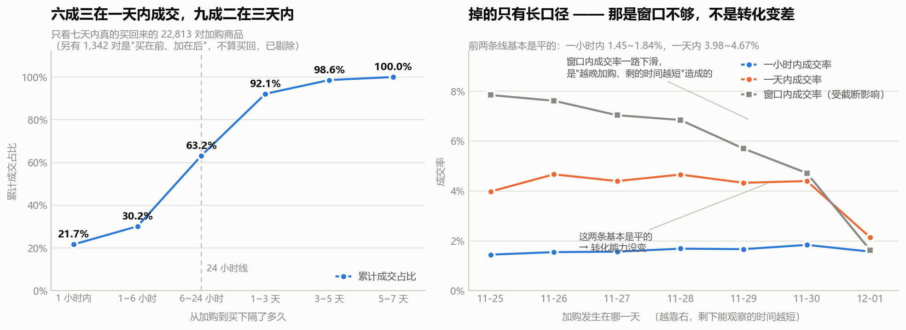
只在七天内真的买回来的 22,813 对上加购商品上（比结果1 的 24,155 少 1,342 对，那 1,342 对是"买在前、加在后"，不算买回），看从加购到购买隔了多久：
| 加购到购买 | 对数 | 区间占比 | 累计占比 |
|---|---|---|---|
| 1 小时内 | 4,946 | 21.68% | 21.68% |
| 1~6 小时 | 1,935 | 8.48% | 30.16% |
| 6~24 小时 | 7,547 | 33.08% | 63.24% |
| 1~3 天 | 6,590 | 28.89% | 92.13% |
| 3~5 天 | 1,476 | 6.47% | 98.60% |
| 5~7 天 | 319 | 1.40% | 100.00% |
63.24% 在 24 小时内成交，92.13% 在 3 天内成交。
注意 6~24 小时这一档是最大的一块（33.08%），比"1 小时内"还大。这说明最常见的模式不是"马上下单"，也不是"过几天再说"，而是"先放购物车，睡一觉或者过半天，再回来买"。
这条直接决定了触达时点：在加购当下催单，打到的是那 21.68%；真正的机会窗口是加购后的几小时到第二天。
结合 S8 的发现（加购之后下一步成交概率所有动作里最低），同一个结论从两条完全不同的路走出来了：加购的当场不是决策时刻，后面那段才是。
但这个分布必须先过截断检验
上面那张表是把 7 个加购日混在一起算的。越晚加购的人，能观察到的时间越短——12-01 加购的人，最多只能观察到几小时。
所以按加购日拆开，同时看三个不同长度的口径：
| 加购日 | 加购对数 | 剩余可观察天数 | 一小时内成交率 | 一天内成交率 | 窗口内成交率 |
|---|---|---|---|---|---|
| 11-25 | 56,287 | 6 | 1.45% | 3.98% | 7.85% |
| 11-26 | 57,622 | 5 | 1.55% | 4.67% | 7.62% |
| 11-27 | 52,923 | 4 | 1.57% | 4.40% | 7.04% |
| 11-28 | 52,747 | 3 | 1.69% | 4.66% | 6.85% |
| 11-29 | 53,931 | 2 | 1.67% | 4.33% | 5.70% |
| 11-30 | 55,075 | 1 | 1.84% | 4.40% | 4.72% |
| 12-01 | 60,585 | 0 | 1.57% | 2.14% | 1.63% |
三个口径的表现完全不同，这就是截断检验的价值：
- 一小时内成交率：1.45% ~ 1.84%，完全平稳。 这个口径几乎不受窗口影响（只要加购日不是最后一天，一小时总是观察得到的），所以它是最干净的一个数。
- 一天内成交率：3.98% ~ 4.67%，也是平的，只有 12-01 掉到 2.14%——因为那天加购的人在窗口结束前根本凑不满一天。
- 窗口内成交率：7.85% → 4.72%，单调下滑。 这条线看起来像"越晚加购的人转化越差"，但它其实是纯截断效应——前面两条平线已经证明转化能力没变，变的只是"还剩多少时间能观察"。
所以真正的七天内成交率，应该看 11-25 那批人的 7.85%——他们有 6 天可观察，最接近完整窗口。不是 6.21% 那个混合值，更不是 12-01 的 1.63%。
一条随时间下滑的曲线，如果同时有一条不随时间变化的短口径在，那下滑就是窗口造成的，不是业务变差。 这是本项目里判断"截断"的通用手法（S5 用过一次，S9 这次做成了标准的三口径对照）。
4. 够得着吗：89.21% 的人，加购之后还会回来
盘子大、时点清楚，还有一个前提要验：这些人还回得来吗？ 如果加购之后就再也没出现过，站内召回根本触达不到。
| 指标 | 值 |
|---|---|
| 加购人数 | 66,542 |
| 加购之后还回来过 | 59,361 |
| 站内可触达占比 | 89.21% |
接近九成的加购者，在最后一次加购之后还回到过站内。
⚠️ 这是下界，不是准确值。 条件是"最后一次加购之后还在站内出现过"，而窗口末端（12-01）加购的人根本没时间回来，被算进了"没回来"。真实比例只会比 89.21% 更高。
而且这个条件很松：加购之后隔一分钟再点一次也算"回来过"。它回答的是"站内有没有机会触达"，不是"推了个提醒他会不会看"。
结论：站内召回在触达层面是可行的，不需要依赖站外渠道（短信、推送），也就不需要那部分成本。 但这只证明了"能送到"，没证明"送了有用"——那要靠下一节的实验。
5. 机会量化：一张算术换算器，不是预测
| 情景 | 假设 | 多成交件数 | 提升后整体加购成交率 |
|---|---|---|---|
| 基准 | 不做任何召回 | 0 | 6.21% |
| 保守 | 沉默组成交率 0 → 5% | 18,251 | 10.90% |
| 中性 | 0 → 10% | 36,502 | 15.59% |
| 乐观 | 0 → 20% | 73,003 | 24.97% |
怎么读这张表：
第一，它是"如果……那么……"的换算，不是预测。
那三个提升幅度（5 / 10 / 20 个百分点）是我拍的，不是数据算出来的。 这份数据里没有实验、没有对照组，我无法验证任何一个提升率。
它的唯一作用是回答一个更朴素的问题："每提升 1 个点的沉默加购转化，对应多少件成交？"答案是 3,650 件。 把"召回有没有价值"从一句感觉变成一个可以坐下来谈的算术。
第二，哪一档现实，有锚可以对照：
- 沉默件当前的成交率是 0%（定义如此——它们之所以在"沉默"这一档，就是因为没有成交）
- 全部加购件当前的成交率是 6.21%
- 观察最充分的 11-25 批次，窗口内成交率是 7.85%
所以："保守"档 5% 相当于把沉默组从 0 拉到接近总体平均（6.21%）——这是个"够得着"的目标。
"乐观"档 20% 是总体平均的三倍多，现实中基本达不到，列出来只是为了说明上限在哪。
我把它列出来的原因，是为了让这张表不能被我一个人用好——任何看到这张表的人都能判断哪一档可信。
第三，要拿到真实提升率，只有一条路：做 A/B 实验。
这是这一节的结论，不是局限。 一个数据分析报告最诚实的收尾，往往不是"建议加大投入"，而是"我算到了这里，剩下的需要一次实验"。
6. 一句人话结论
389,170 对加购商品里，93.79%（365,015 对）七天内没有成交，涉及 66,542 个人。这个盘子够得着——89.21% 的加购者加购之后还会回站内（这还是下界）。时点是清楚的：63.24% 的买回发生在 24 小时内、92.13% 在 3 天内，而且最容易出事的是"6~24 小时"这一档（33.08%）——加购当下的催促只能打到两成，真正的窗口在几小时之后到第二天。 资源该压在谁身上也是清楚的：一半的人（32,942 个）握着 84.47% 的沉默件，名单发给他们，覆盖面不变但人数少一半。至于能提升多少——这份数据回答不了，它没有实验、没有金额，所以答案停在"件数"，下一步是 A/B 测试。
7. 面试可以这么说
"S8 我发现加购带来的成交有 78% 发生在会话结束之后，所以就顺着做了一步运营测算：这批沉默的加购，值不值得捞。
先说一条纪律：这份数据没有金额字段，所以整个测算我只用件数和人数，不给 GMV、也不给 ROI。 因为客单价和成本数据里都没有——没有金额字段却给出'预计增收多少万'，是这类项目最容易被一句话问穿的地方。
盘子是：389,170 对加购商品，七天内只有 6.21% 成交，剩下的 93.79% 是沉默的，涉及 66,542 个人。这里我先做了个人群拆分——按每个人沉默了几件分四层，结果一半的人（49.51%）一个人就攒了 4 件以上没买的，这 3 万人握着 84.47% 的沉默件。所以召回名单该发给他们，不是平均发给所有人——覆盖面一样，人数少一半。
然后是时点。我算了从加购到购买隔了多久：63% 在一天内，92% 在三天内。但这里有个陷阱——越晚加购的人能观察的时间越短，混在一起算会低估长间隔。所以我按加购日拆开，同时看三个口径：一小时内成交率 1.45 到 1.84，一天内 3.98 到 4.67，这两条都是平的；只有'窗口内成交率'从 7.85 一路掉到 4.72。前面两条平线证明了转化能力没变，那长口径的下滑就纯粹是窗口不够造成的，不是业务变差。
这个分布直接决定触达时点：加购当下催只能打到 21.68%，最大的那一档反而是'6 到 24 小时'，占 33%。
我还验了一个前提：这批人还回得来吗。89.21% 的加购者加购之后还会回站内——而且这是下界，因为窗口末端加购的人根本没时间回来。所以站内召回在触达上是可行的，不需要站外渠道。
最后是量化，这里我要说清楚一件事：我给的是一张算术换算器，不是预测。 表格里写了三档，但我明确标了哪一档现实：'保守'档 5% 相当于把沉默组拉到接近总体平均 6.21%，够得着；'乐观'档 20% 是总体平均的三倍多，基本达不到，列出来只是让人看到上限在哪。
这几个提升幅度是我拍的，不是数据算出来的——这份数据没有实验、没有对照组，我验证不了任何一个。 要拿到真实提升率只有一条路，做 A/B 测试。这是这一节的结论，不是局限。"
8. 局限
- 没有金额字段，所以只到"件数"和"人数"。 不乘客单价、不给 GMV、不给 ROI。客单价、券成本、触达成本、人力成本，数据里一个都没有。
- 那三个提升幅度是假设，不是估计，更不是预测。 5 / 10 / 20 个百分点是我拍的。任何一档都不能当作结论引用，它们的唯一作用是把"提升 1 个点 = 3,650 件"这个换算关系摆出来。
- 没有实验、没有对照组。 沉默加购组的成交率是 0%（按定义），所以任何"提升"都是反事实，这份数据从原理上就验证不了。要真数只有 A/B 测试一条路。
- 观察窗只有 7 天，所以"沉默"是 7 天内的沉默。 一件第 10 天才被买走的加购商品，在这份数据里永远算沉默。真实的沉默比例一定比 93.79% 低，但这份数据测不出低多少——这是截断，方向已知、幅度未知。
- 窗口末端的截断会同时低估两件事：7 天成交率（6.21% 这个混合值偏低，干净参照是 11-25 批次的 7.85%）和可触达比例（89.21% 是下界）。
- "89.21% 会回站内"只证明能触达，不证明触达有效。 而且条件很松，加购后隔一分钟再点一次也算"回来过"。
- 本节"买回"的定义比 S2/S8 严格（要求购买在加购之后），窗口也不同（剔除了 12-02/12-03）。所以 S2 的 31.13% 和本节的 25.39% 不能互相印证，也不能同时引用。
- 结果1 里"有沉默件的人数"和"至少买回一件的人数"是重叠的，不能相加。 只有"全部买回的人数"是不重叠的。
- 没有做因果推断。 "加购的人沉默率高"不等于"加购导致了沉默"。加购的人本来就和没加购的人不是一批人——他们在认真考虑商品，决策周期天然更长。这是选择效应。
- 召回名单用的是"沉默件数"这一个维度。 真实业务里还要考虑商品价值、类目、时效、用户疲劳度，本节没有金额也没有成本，做不到完整排序。
S10 · 结论与行动建议（收口）
对应脚本：
code/10_build_tableau_tables.py
对应产物：output/tableau/四张聚合表 +_说明.txt
前面九节是"查到了什么"，这一节是"所以呢"
一份分析报告写到最后一节，最容易垮的地方是突然开始说大话：前面九节全是数字和口径，最后一段忽然变成"建议加强用户运营、提升转化效率"。
这一节不做这件事。 我给的三条建议，每一条都必须能回答三个问题：
- 这件事的钱/人力该花在哪 —— 具体到名单、类目、时段
- 凭什么这么说 —— 指向哪一节、哪个数
- 怎么知道做对了 —— 如果没法验证，我就直说没法验证
0. 先说三条被数据否掉的想法
写建议之前先写这个，因为这三条是本项目真正的价值所在。它们都是"听起来很对、但数据不支持"的常识，而且每一条都是我自己先信了、然后被打脸的。
被否掉的① "把资源押给重度用户"
常识： 重度用户贡献最大，当然该重点维护。
数据说： 重度用户（32,695 人，占 33.02%）拿走了 68.12% 的行为量，却只产出 53.11% 的购买量。按"每一份行为产出多少份购买"算，轻度用户是 2.02，重度是 0.78——轻度用户是重度的 2.6 倍。
更直观的一个数： 重度用户的行为里只有 1.61% 是购买，轻度用户有 4.17%。
重度用户是"逛型"，不是"买型"。 把预算投给他们，买的是流量，不是成交。（S7）
被否掉的② "加购是转化的扳机，催加购就能提转化"
常识： 加购是最接近购买的意向动作，加购之后催一下应该最容易成交。
数据说： 加购之后下一步的成交概率是 0.88%——比随机挑一个非购买动作的平均成交概率 1.17% 还低。（pv→buy 是 1.21%，也低于加购的下一步。）
它低不是因为路径错了，是因为"下一步"这个概念本身错了： 加购带来的成交里，78.48% 发生在会话结束之后，当场成交只有 21.52%。（S8）
加购不是扳机，是意向的标记。 它标记的不是"快买了"，是"这个人在认真考虑"。（S8 + S9）
被否掉的③ "晚上是黄金时段，因为晚上加购最多"
常识： 加购行为集中在 22–23 点，证明晚上是决策高峰，活动该压在这个点。
数据说： 加购渗透率确实在 22–23 点最高（30.55% / 31.21%），但"加购者中的购买率"在这个时段最低（43.80% / 38.90%）。而购买渗透率和加购者购买率的双高点都在上午 10 点（14.52% / 62.60%）。
晚上大家往购物车里放东西，白天才真的掏钱。 这是三条完全独立的路径得出的同一个结论：S3（时段渗透率）、S8（加购后成交 78% 在会话外）、S9（加购到购买最大的一档是 6~24 小时）。
建议一：加购召回的时点，从"加购当下"推到"次日上午"
这是本项目最实在的一条建议，因为它同时说清了发给谁、什么时候发、值不值得发。
发给谁
32,942 个人——就是按"沉默了几件"分层里的 D 层（沉默 4 件以上）。
| 分层 | 人数 | 占总人数 | 握着多少沉默件 |
|---|---|---|---|
| A 全部买回 | 1,699 | 2.55% | 0% |
| B 沉默 1 件 | 14,510 | 21.81% | 3.98% |
| C 沉默 2~3 件 | 17,391 | 26.14% | 11.55% |
| D 沉默 4 件以上 | 32,942 | 49.51% | 84.47% |
近一半的人握着 84.47% 的机会。 名单发给 D 层，覆盖面几乎不变，人数少一半——每一次触达都消耗用户耐心和权益预算，这个减法必须做。（S9）
什么时候发
| 从加购到买下 | 区间占比 | 累计占比 |
|---|---|---|
| 1 小时内 | 21.68% | 21.68% |
| 1~6 小时 | 8.48% | 30.16% |
| 6~24 小时 | 33.08% | 63.24% |
| 1~3 天 | 28.89% | 92.13% |
最大的一档是"6~24 小时"（33.08%），比"1 小时内"还大。
在加购当下催单，只能打到那 21.68%。真正的窗口是次日。
配合时段结论看更清楚：晚上 22–23 点加购的人最多（渗透率 30.55%/31.21%），但他们的成交率最低（43.80%/38.90%）；上午 10 点加购的人成交率最高（62.60%）。
所以具体动作是：晚上加购的，第二天上午推；不要当晚推。
值不值得发
| 指标 | 值 |
|---|---|
| 沉默加购件 | 365,015 件 |
| 每提升 1 个点的沉默成交率 | 对应 3,650 件 |
| 站内可触达（加购后还回来过） | 89.21%（下界） |
89.21% 是下界——窗口末端加购的人根本没时间回来，被算进了"没回来"。这在触达层面证明了站内召回可行，不需要依赖短信推送那部分成本。
⚠️ 到这儿就停。 这份数据没有金额字段，我算不出券的成本、触达的成本、ROI。没有金额字段却给出"预计增收多少万"，是这类项目最容易被一句话问穿的地方，客单价哪来的？ 我只能算到件数和人数。（S9）
怎么知道做对了
做 A/B 测试。 沉默加购组当前的成交率是 0%（按定义），所以任何"提升幅度"都是反事实，这份数据从原理上验证不了。
这不是本节的局限，是本节的结论。 一个分析报告最诚实的收尾，往往不是"建议加大投入"，而是"我算到了这里，剩下的需要一次实验"。
建议二：KPI 按类目定——但依据是"复现性"，不是"p 值"
这条建议的重点不在结论，在方法，因为这里有一个绝大多数人都会踩的坑。
结论本身
不同类目的转化率差 20.6 倍（最高 15.24%，最低 0.74%）。卡方检验 p 值小到连科学计数法都打不出来。
但这两个数都没有决策价值：
| 指标 | 值 | 说明 |
|---|---|---|
| 卡方 p 值 | 小到打印不出 | 样本 61 万配对，0.1 个点的差异都不可能是偶然 |
| 效应量 Cramér's V | 0.1322 | 弱关联 → 类目不是决定性因素 |
| 转化率 95% CI 中位宽度 | 0.72 个百分点 | 随便差 1 个点就算"显著"，而实际差距是 20 倍 |
p 值回答的是"差异会不会是抽样偶然造成的"。样本量够大的时候，这个问题的答案永远是"不是"，所以 p 值必然极小——它没有信息量。
"显著"这个门槛在这里低得没有任何决策价值。
那凭什么按类目定 KPI
凭复现性。 把 7 天窗口切成前后两半分别算：
| 检验 | 结果 |
|---|---|
| Spearman 秩相关（前后两半的排序一致性） | 0.994 |
| Top 10 类目重合度 | 10 / 10 |
前后两半独立算出来的类目排名几乎完全一样。
所以按类目定 KPI 有依据——但这个依据来自复现性，不是来自 p 值。
如果当初我看到 p < 0.001 就收工，我会得出"类目差异极其显著、类目是核心抓手"这个结论，而 Cramér's V = 0.13 说的正好相反。 两个数不矛盾：差异是真的，但类目解释不了多少东西。
诚实地说：这条建议的力度比建议一弱。 类目差异真实稳定，但"按类目定 KPI"具体该定几个类目、怎么定，这份数据给不出更多。（S6）
建议三：别把"高活跃"当"高价值"
这条是建议①的反面，单独列出来是因为它在资源分配上有直接后果。
| 指标 | 轻度 | 中度 | 重度 |
|---|---|---|---|
| 人数 | 33,738 | 32,585 | 32,695 |
| 人数占比 | 34.07% | 32.91% | 33.02% |
| 行为量份额 | 7.84% | 24.04% | 68.12% |
| 购买量份额 | 15.84% | 31.05% | 53.11% |
| 单位行为购买产出 | 2.02 | 1.29 | 0.78 |
| 自身行为里购买占的比例 | 4.17% | — | 1.61% |
三层是按行为量三等分切出来的，所以人数占比本来就该是三成上下（切分点撞上平局，最大最小一层差 3.5%，已交代）。真正的信息全在后面四行。
重度用户贡献 68% 的流量，只贡献 53% 的成交。
⚠️ 注意：层的购买渗透率是单调的（40.2% → 60.7% → 73.8%，越活跃买过的比例越高），这符合直觉。 反常的是另一件事：每层自己行为里的构成比例是反的。
同一个"重度用户"概念，换个分母，结论就反过来。 这是本项目里最典型的"口径决定结论"。
策略方向也是相反的：
- 逛型（重度）要的是更短的决策路径——他们缺的不是访问频次，是临门一脚
- 买型（轻度）要的是更高的回访频次——他们来了就买，但来得少
⚠️ 这是描述性观察，不是因果。 不能反过来说"让他少逛就能提高购买率"。（S7）
Tableau 四屏看板
数据源：output/tableau/ 四张 csv。重跑 python code/10_build_tableau_tables.py 即可重建，不要手改 csv。
全局规则（四条，都是踩过的坑）
- 不做双轴图。 行为量（3.7 万~60 万）和渗透率（7%~63%）量级差太远，放一张图上是骗人的。拆成上下两张小图共用横轴。
- 小时列已经是北京时间。 建表时统一 +8 小时了，看板上必须写明——否则"凌晨 0 点还有 24 万次行为"会被读成 UTC。
- 颜色的含义是"这个系列是谁"，不是"排第几"。 筛选器改变系列数量时，不能重新上色。
- 文字不穿系列颜色。 数值标签一律用深灰，颜色由旁边的色块承担。
屏① 漏斗（01_funnel.csv + 01b_funnel_split.csv）
- 主图：横向漏斗条，三步
浏览 98,460 → 加购 66,138 → 购买 42,473 - 每一条标出占上一步的百分比（67.17% / 64.22%）
- 下面挂
01b做口径核对表，用"口径类别"做筛选器，一次只看一组——三组的分母不同，绝不能拼成一张宽表
屏② 24 小时（02_hourly.csv）
- 上小图： 行为量柱状图，横轴 0–23 时
- 下小图： 三条渗透率折线，同轴（纵轴 0~70%）：加购渗透率 / 购买渗透率 / 加购者购买率
- 三条线都用百分比，可以同轴；行为量单独一张
- ⚠️ 三条线必须配图例（≥2 个系列，图例永远在）
- 要读出来的那句话：加购渗透率 23 点最高，购买渗透率 10 点最高——两条线的峰不在同一个时刻
屏③ 留存（03_retention.csv）
- 热力图：行 = 首次出现日，列 = 距首次出现天数，色深 = 回访率
- 必须把"队列说明"这一列显示出来。 "队列"两个字一定会被读成"新客"，这一列是唯一的挡箭牌
- ⚠️ 空白的格子是"还没到那天"，不是"没回访"——不要用 0 去补
- 默认展示 11-25 ~ 11-28 四个队列合并后的结果（D1 = 74.90% / D2 = 73.46% / D3 = 73.12%），单个队列作为下钻
屏④ 类目（04_category.csv）
- 散点图：横轴 = 浏览人数（对数轴），纵轴 = 转化率，点大小 = 行为量
- 类目 ID 是脱敏编号，数据集里没有类目名称，不要编造中文名
- 必须在图上固定一句提醒： 转化率差 20.6 倍，但 Cramér's V 只有 0.13，按类目定 KPI 的依据来自复现性（Spearman 0.994 / Top10 10/10），不是 p 值
这份分析没做什么
写在最后，因为面试官更可能问"你这个结论有什么问题"，而不是"你这个结论是什么"。
- 没有金额字段。 所以全项目只到行为量、人数、转化率、留存，没有 GMV、客单价、ROI。被追问就答"数据集五列里没有金额，用转化链路替代成交额拆解"。
- 没有订单号。 "购买次数"是"人 × 商品"的近似口径，同一人同一商品多次购买算一次。
- 窗口只有 7 天（12-02/12-03 已作为异常剔除）。所以"沉默"是7 天内的沉默，真实的沉默比例一定比 93.79% 低——方向已知、幅度未知。
- 没有注册时间。 留存只能用"窗口内第一次出现"冒充，11-25 那个队列把老客全装了进去（71.7%），所以一律说"回访率"，不说"新客留存"。
- 全部是描述性分析，没有因果推断。 "加购的人沉默率高"不等于"加购导致沉默"——他们本来就和没加购的人不是一批人，决策周期天然更长，这是选择效应。
- 三个情景的提升幅度（5%/10%/20%）是我拍的，不是估计出来的。 没有实验、没有对照组，任何一档都不能当结论引用。
- 样本量带来的"显著"要打折看。 61 万配对下，0.1 个百分点的差异就"显著"，而实际差距是 20 倍。p 值在这里没有决策价值。
面试可以这么说
30 秒版：
"我用淘宝一份 1000 万行的用户行为数据做了一次交易漏斗分析，从浏览到加购转化率 67%，加购到购买 64%。但这个项目真正有价值的地方是三条被数据否掉的常识：重度用户拿走 68% 的流量却只产出 53% 的成交，加购之后下一步的成交概率反而低于平均，晚上加购最多但成交率最低。顺着最后一条做了一步召回测算，算出了名单该发给谁、什么时候发、以及必须用 A/B 才能验证提升幅度。"
两分钟版（挑一条展开）：
"拿'加购'举例。常识是加购是最接近购买的意向动作，催加购应该最有效。但我算完发现，加购之后下一步的成交概率是 0.88%，比随机挑一个非购买动作的平均成交概率 1.17% 还低。
我没有停在这个反直觉的数上，而是去查为什么。查出来：加购带来的成交里 78% 发生在会话结束之后，当场成交只有 21%。所以它低不是路径错了，是'下一步'这个概念本身错了——加购不是扳机，是意向的标记。
顺着这个往下做召回测算，我给自己立了一条纪律：这份数据没有金额字段，所以整个测算只用件数和人数，不给 GMV 也不给 ROI——客单价和成本数据里都没有，这种项目最容易被一句'客单价哪来的'问穿。
测算的结果是：389,170 对加购商品里 93.79% 七天内没成交，涉及 66,542 个人。名单不该平均发——一半的人握着 84% 的沉默件，发给他们覆盖面几乎不变，人数少一半。时点上，最大的一档是'6 到 24 小时'占 33%，比'1 小时内'还大，所以该第二天上午推，不是当晚推。
最后我明确说了：那三档提升幅度是我拍的，不是数据算出来的。 没有实验、没有对照组，这份数据从原理上验证不了。要真数只有一条路，做 A/B 测试。这是结论，不是局限。"
如果被问"这个项目最大的不足"：
"没有金额，所以所有结论都停在'件数'而不是'钱'。 其次窗口只有 7 天，'沉默'是 7 天内的沉默——真实的沉默比例一定更低，但这份数据测不出低多少，这是截断，方向已知、幅度未知。第三，全是描述性分析，没有因果——比如'加购的人沉默率高'，加购的人本来就和没加购的人不是一批人，这是选择效应，不是加购导致的。"